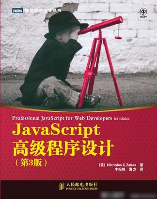

JavaScript 高级程序设计一、 JavaScript 简介ECMAScript 版本五大浏览器DOM（文档对象模型）BOM （浏览器对象模型）小结二、在HTML中使用JavaScript1. 写script标签的时候尽量写到最后面2.延迟脚本执行三、数据类型NumberStringSwitch四、函数作用域和内存arguments对象数组regExp函数表达式和函数声明的区别函数调用基本数据类型booleanString五、面向对象构造函数与普通函数的区别原型原型的方法原型的动态性原生对象的原型原型对象的问题组合使用构造函数 和 原型对象六、继承谨慎的定义原型方法组合继承（用的最多）寄生式继承 优化组合继承的多次调用七、函数表达式创建函数的两种方式if语句不要判断函数声明闭包私有作用域私有变量和方法静态私有变量模块模式八、BOM获取窗口的位置获取窗口的大小弹窗 window.open定时器和延时器系统对话框location 对象URL操作navigator 对象screen 检测浏览器窗口外的位置信息history 对象九、能力检测十、DOM使用自定义属性创建节点延迟script执行脚本延迟css执行创建table十一、DOM 扩展HTML5删除指定的classCLassListDocument设置自定义属性innerHTMLinsertAdjacentHTMLinnerHTML避免重复赋值outerHTML和outerText十二、DOM 2和DOM3cssText迭代CSS样式元素大小客户区大小滚动大小十三、事件侦听函数移除侦听函数IE中的时间处理程序事件对象IE中的事件对象跨浏览器使用事件焦点事件鼠标和滚轮事件客户区坐标位置页面坐标位置获取整个屏幕的坐标检测用户点击时按下哪个减相关元素鼠标滚轮事件触摸设备键盘事件键码字符编码textInput 事件外接设备的键盘事件变动事件右键自定义事件确定关闭页面吗比onload加载都快opera和Firefox 的页面储存事件URL 变动通知事件--------设备事件手机方向事件触摸事件手势事件事件委托移除事件处理程序模拟事件剪贴板事件在十四章 操作剪贴板十四、表单提交表单重置表单获取表单（简便方式）表单中的focus强化选择文本选择部分文本频闭所有非数字操作剪贴板自动切换焦点HTML5约束API选择框脚本表单序列化富文本编辑十五、canvas绘图基本用法2D上下文填充和描边绘制矩形绘制边框清除矩形绘制路径绘制三角和圆弧绘制贝塞尔曲线透明度阴影渐变黑白图像线条末端样式线条拐角样式虚线绘制文本绘制图片切片状态的保存和恢复 变形旋转缩放transform (变形矩阵)合成剪裁路径动画案例WebGL类型化数组十六、HTML5脚本编程跨文本消息传递原生拖放拖放事件 （依次触发）放置目标datatransfer媒体元素解码器的支持情况十七、错误处理与调试IEFirefoxSafariOperaChrometry-catch语句finally 错误类型抛出错误error事件处理错误的策略常见的IE错误总结十八、JavaScript与XMLXML十九、E4x二十、JSON语法简单值对象数组序列化选项JSON.styingfy() 的属性解析选项JSON.parse()二十一、ajax 和 cometxhr用法get请求post请求请求二级FormData超时限定overrideMimeType() 方法进度事件load事件progress跨域问题解决跨域的几种方式src属性（标签）JSONP当然如果是对接后端的话 后端也可以修改comet实现comet的两种方式长轮询流comet进阶APISSE APIweb socketsSSE 和 web sockets总结二十二、高级技巧构造函数加不加new的区别函数绑定防篡改对象高级定时器节流函数二十三、离线应用与客户端储存离线检测应用缓存数据存储IE中的数据暂存web存储StoragesessionStorageglobalStoragelocalStorage限制大小indexed DB使用二十四、最佳实践可维护性代码约定变量和函数名初始化数据类型松散耦合编程实践命名空间instanceof和typeof 的区别使用常量性能JSLint 用来检测代码是否有问题 比如遗漏的分号二十五、新兴的API地理位置获取file API获取文件信息读取文件内容读取文件并渲染读取部分内容对象URL读取拖放的文件web计时web Worker附录A剩余参数和参数分布解构赋值迭代器映射和集合附录B严格模式
PDF版地址：复制这段内容后打开百度网盘App，操作更方便哦。 链接:https://pan.baidu.com/s/1kxi8XfxGBoqqQAw1fuyamA 提取码:491g
JavaScript 高级程序设计
一、 JavaScript 简介
JS诞生于1995年 起初只是用来做普通的表单验证 因为那个年代的网速比较慢 用服务器做验证 势必加大了服务器的压力 而且响应时间漫长
JavaScript与ECMA script 的区别 ，是由什么组成的？
- JavaScript是包含ECMA script的
- JS的组成是由：ECMAScript DOM BOM 三部分组成
ECMAScript 版本
- ECMAScript 第一版 1.1
- ECMAScript 第二版 只是编辑加工 没有增加任何的新操作 所以一般不用 第二版来衡量ES（ECMAScript）的兼容性
- ECMAScript 第三版 这一版才是一次真正的修改 增加了很多新操作和优化 。从各个综合来看 第三版标志着ES成为了一门真正的语言
- ECMAScript 第四版 进行了一次全面的检核修订 增加了强类型变量和新数据结构。在第三版的基础上完全定义了一门新语言
- ECMAScript 第五版 只是进行了小幅的修改 因为 第四版对ES的跨越太大了 ES的3.1版本 成为了 第五版
五大浏览器
- 谷歌 （Chrome）
- 苹果 （Safari）
- 火狐 （Firefox）
- 欧鹏 （Opera）
- IE
DOM（文档对象模型）
DOM (Document Object model)
DOM并不只是针对JavaScript的，很多语言也都实现了DOM。不过在web浏览器中，基于ECMAScript实现的DOM的确已经成为JavaScript这一入门语言的重要组成部分
BOM （浏览器对象模型）
BOM (Browser Object Model)
BOM是操作浏览器窗口的（也是会经常导致出现问题的地方），他作为JS实现的一部分却一直没有标准，直到HTML5的出现 致力把BOM功能写入规范，H5发布后 很多关于BOM的问题都烟消云散
小结
JavaScript是一种专为网页交互而设计的脚本语言，由下列三部分组成
- ECMAScript 由ECMA-262定义，提供核心语言功能
- 文档对象模型（DOM）提供访问和操作网页内容的方法和接口
- 浏览器对象模型（BOM）提供与浏览器交互的方法和接口
二、在HTML中使用JavaScript
- SRC属性像IMG的URL一样，可以是外界某一领域完整的URL
- 比如
1. 写script标签的时候尽量写到最后面
- 因为有先后执行顺序 写到body后面 最大程度的减少了程序的出错
- 当然也可以用属性来改变脚本的延迟
尽量使用外联式来引入JavaScript脚本
- 可维护性 全部的HTMLJS代码都放在一文件内不好维护
- 可缓存 多个页面使用一个JS文件 这个JS文件只需要下载一次
- 适应未来
2.延迟脚本执行
- defer 延迟脚本在页面元素全加载出来后在执行
- async 不必等待其他脚本 可以提前执行 也不用等待页面元素全加载
三、数据类型
Number
- parseInt 会转为整数 忽略一切小数和字符串
- parseFloat 会保留一位小数 也会忽略字符串
String
- 字符串与字符串是不能进行比较的 如果比 比的也是字符编码 unicode
Switch
- Switch 的case值在比较的时候使用的是 === 所以 10 ! == '10'
四、函数作用域和内存
arguments
- arguments 是一个数组 是函数传参数的数组（有length）
- arguments === 函数接收参数的值
- arguments对象的长度是由传入的参数的个数决定的，不是定义函数的参数个数决定的
- 也就是 由 names（1，2，3）决定 不是由 function names（name1，name2）决定的
- 严格模式中 不能使用 arguments[0] = 10 这样赋值
- 参数没赋值和变量没赋值一样 值为 undefined
对象
1 let obj1 = new Object();2 let obj2 = obj1;3 obj1.name = 'zml';4 console.log(obj2.name); // zml- 这里obj2的name也是zml 因为obj1 和 obj2 的指针指向的都是同一片内存空间
数组
- Array.isarray 判断是不是一个数组
- 数组有封装好的 reverse 和 sort方法
- concat 拼接数组 返回新数组
- slice 截取数组 返回result
- splice 删除、插入、替换 数组
- indexOf() 查找数组中的某个元素的位置 两个参数 第一个参数是要查找的项 第二个参数 是起始位置开始查找
regExp
创建正则匹配字符串的方法有两种
- 利用 // 创建；
- 利用 构造函数 new regExp（‘匹配‘，’标志‘）； 注意用构造函数 里面用字符串包着
注意：利用字面量创建的regExp实例不会重置，而构造函数 每次都会创建新的实例
函数表达式和函数声明的区别
xxxxxxxxxx81// 函数声明 2function one(num1, num2) {3 return num1 + num2;4}5// 函数表达式6let one = function (num1, num2) {7 return num1 + num2;8 }- 注意 ： 函数表达式没有变量提升 会报错 is not defined
函数调用
xxxxxxxxxx51 // bind 方法 会返回一个函数 执行这个函数才会执行bind方法2 // apply方法的第一个参数 是 指针作用域 第二个是传入函数内的参数 可以使用 argument全部传入到函数内 也可以使用数组的方法 把参数传到函数内3 // call方法 的第一个参数 同上 但是第二个参数 传值的时候 必须一个个枚举出来 不能用argument和数组的方式4 // 在不传值的情况下 使用apply和call都大差不差 ，传值的时候 可以考虑 那个方便用哪个，多了用apply少了用call5 // 其实传值并不是apply和call的真正用武之地，改变函数赖以生存的作用域 才是apply和call重要的地方 小技巧
xxxxxxxxxx21let arr = [1, 2, 4, 3, 4, 234, 324, 23, 4];2console.log(Math.max.apply(Math, arr));有些方法接收一系列数据 但不是数组 就i可以用 apply方法 巧妙的设置this值 和 把一系列值传进去
基本数据类型
boolean
xxxxxxxxxx21let flag = new Boolean(false);2console.log(flag && true);为什么是true呢 因为 布尔表达式中的所有对象都会被转化为true
String
- slice
- substring
- substr
- concat
- 以上都是字符串截取和拼接的一些方法
五、面向对象
构造函数与普通函数的区别
x1 // 构造函数与普通函数的唯一区别就是用 new关键字调用，不存在定义构造函数的特殊语法2 function Test2(name, age) {3 this.name = name;4 this.age = age;5 this.add = function arg(params) {6 console.log('1');78 }9 }10 // 构造函数调用11 let result2 = new Test2('zml', 19);12 console.log(result2);13 // 用普通函数调用14 Test2('zml', 18);15 window.add();16 // 在另一个对象作用域中调用17 let obj = {};18 Test2.call(obj, 'wqq', 17);19 console.log(obj);原型
xxxxxxxxxx1712 // 原型 prototype 使用原型可以使作用域达到顶峰3 // 用原型给构造函数添加属性4 function Proto() { };5 Proto.prototype.name = 'zml';6 Proto.prototype.age = '18';7 Proto.prototype.sayAge = function () {8 console.log(this);9 console.log(this.age);1011 };12 let result3 = new Proto();13 console.log(result3);14 result3.sayAge();15 let result4 = new Proto();16 result4.sayAge();17 console.log(result3.sayAge === result4.sayAge);原型中的查找规则
- 首先先去自身去查找有没有要找的属性，如果有就返回要找的属性，如果没有就去prototype去查找
原型中的重写规则
如果原型中有属性，再给对象实例添加属性，只会屏蔽原型中的属性，不会修改，即使是null也不会修改。delete操作符可以删除
xxxxxxxxxx171function Proto() { };2Proto.prototype.name = 'zml';3Proto.prototype.age = '18';4Proto.prototype.sayAge = function () {5console.log(this);6console.log(this.age);7};8let result3 = new Proto();9let result4 = new Proto();10console.log(result3.name);11console.log(result4.name);12// 这里重写实例对象的name属性13result3.name = 'wqq';14// 影响15console.log(result3.name);16// 不影响17console.log(result4.name);但是delete操作符可以删除实例对象的属性 然后就恢复了原型中的属性
xxxxxxxxxx31delete result3.name;2console.log(result3.name);3console.log(result4.name);
原型的方法
- isPrototypeOf 测试原型对象之间是否存在关系 返回boolean值
- hasOwnProperty 测试属性是来自原型还是来自实例 返回boolean值
- in 操作符 测试属性是否来自实例或者原型 如果有 则都返回true
原型的动态性
原型具有动态性 即使先创建实例 再给原型添加属性 也是能访问的到的 其原因是 实例和原型的关系，查找实例没找到后就会去原型找，实例和原型的连接仅仅只有一个指针
请记住：实例中的指针仅指向原型，而不是构造函数
xxxxxxxxxx71function Proto2() { }2let result6 = new Proto2();3Proto2.prototype.sayName = function () {4console.log('111');56}7result6.sayName();没问题虽然原型因为有实例的指针有动态性，但是如果重写了prototype 那么将访问不到
xxxxxxxxxx111function Proto2() { }2let result6 = new Proto2();3Proto2.prototype = {4constructor: Proto2,5name: "zml",6age: 18,7sayName: function () {8console.log(this.name);9}10}11result6.sayName();报错 因为可以给原型添加属性 但是不能重写
原生对象的原型
xxxxxxxxxx81 // 所有的原生对象（Object，String，Array）的原型 都可以重写 因为原生对象也是用prototype写入的2 String.prototype.isWith = function (test) {3 return this.indexOf(test) == 0;4 }5 let str = 'hello world';6 console.log(str.isWith('hello'));7 // 因为不是str.prototype.isWith 而是 str.isWith 呢 因为str本身就算字符串 后台会处理 但如果是自己创建的prototype就要加prototype关键字8 // 尽管可以用这个方法为原生对象添加原型方法 但是不建议这么做 因为很容易造成命名冲突 或者 重写原生对象的原型 原型对象的问题
xxxxxxxxxx231function Person(){2}34Person.prototype = {5constructor: Person,6name : "Nicholas",7age : 29,8job : "Software Engineer",9friends : ["Shelby", "Court"],10sayName : function () {11alert(this.name);12}13};1415var person1 = new Person();16var person2 = new Person();1718person1.friends.push("Van");1920alert(person1.friends); //"Shelby,Court,Van"21alert(person2.friends); //"Shelby,Court,Van"22alert(person1.friends === person2.friends); //true23向一个实例追加新属性 结果第二个实例中的属性也被改变了 因为指针相同
组合使用构造函数 和 原型对象
xxxxxxxxxx261 // 组合使用构造函数和原型 都可以拥有各自的属性 又互相连接 （构造函数写 变动属性 原型写共享的不变动的属性）2 // 构造函数3 function Proto(name, age, height) {4 this.name = name;5 this.age = age;6 this.height = height;7 this.arr = ['zml', 'wqq'];8 }9 // 原型 (注意重写后constructor的指向问题)10 Proto.prototype = {11 constructor: Proto,12 // 共享不改动的方法13 sayName: function () {14 console.log(this.name);15 }16 }17 // 调用18 let res = new Proto('zml', '18', '1.88');19 let res2 = new Proto('wqq', '17', '1.60');20 console.log(res);21 console.log(res2);22 res.arr.push('qqq');23 console.log(res); //不会影响下面的res2 因为数组在构造函数内 不是原型中24 console.log(res2); //不受影像25 res.sayName(); //共享方法正常运行26 res2.sayName();关于constructor指向问题
- 只有constructor在函数内部 才不用重新定义指向（前面说过 每个函数包括对象 都会默认创建constructor指向 你都给prototype重写成一个对象了 constructor指向肯定就会改变 啊 指向了 Object 实例对象）
六、继承
xxxxxxxxxx291// 第一个构造函数2 function SuperType() {3 // true 和 false 单纯的作为构造函数值区别4 this.flag1 = true;5 }6 // 为第一个构造函数添加原型 7 SuperType.prototype.getSuperType = function () {8 console.log(this.flag1);9 }10 // 第二个构造函数11 function SubType() {12 this.flag2 = false;13 }14 // 继承 让subType的原型指向superType 使其能访问构造函数1中的flag1属性15 SubType.prototype = new SuperType();16 // 给第二个构造函数添加自己的原型17 SubType.prototype.getSubType = function () {18 console.log(this.flag2);19 // 原型的方法还在Super Type中 因为SubType指向Super Type所以能找到 而 属性（flag1）则在SubTyoe的原型中20 console.log(this.flag1);21 }22 // 实例化SubType23 let res5 = new SubType();24 res5.getSuperType(); //如果是true则证明继承成功25 res5.getSubType();26 // 他们的关系 res5 → SubType → SuperType27 // 查找的步骤 res5(实例) → SubType.prototype → SuperType.prototype（找到了）→ 如果没找到 到原型链末端才会停止 28 // 注意现在res5的constructor指向的是Super Type 因为原先SubType的prototype中的constructor被重写的缘故29 // 也不是被重写了 而是SubType的原型指向了Supertype的原型
谨慎的定义原型方法
xxxxxxxxxx291function SuperType() {2 this.property = true;3 }45 SuperType.prototype.getSuperValue = function () {6 return this.property;7 };89 function SubType() {10 this.subproperty = false;11 }1213 //继承14 SubType.prototype = new SuperType();1516 // 使用对象字面量添加新方法 会使上一行继承代码失效 因为 此时SubType的原型指向的是Object 而不是Supertype17 // 也可以理解为： = 是赋值（赋值为了一个Object那原型链就错乱了） .是添加属性18 SubType.prototype = {19 getSubValue: function () {20 return this.subproperty;21 },2223 someOtherMethod: function () {24 return false;25 }26 };2728 var instance = new SubType();29 alert(instance.getSuperValue()); //error!组合继承（用的最多）
缺点是调用子构造的次数在2次以上
xxxxxxxxxx311 function SuperType(name) {2 this.name = name;3 this.colors = ['red', 'blue', 'yellow'];4 }5 SuperType.prototype.SayName = function () {6 console.log(this.name);7 }8 function SubType(name, age) {9 // 继承属性 name是传给SuperType的10 SuperType.call(this, name); //第二次调用11 this.age = age;12 }13 // 继承原型14 SubType.prototype = new SuperType();15 // 注意SubType的constructor的现在指向Supertype 需要指回16 SubType.constructor = SubType;17 // 定义子类的原型18 SubType.prototype.SayAge = function () {19 console.log(this.age);20 }21 let res = new SubType('zml', 17); //第一次调用22 console.log(res.name); // zml23 console.log(res.colors); // ["red", "blue", "yellow"]24 res.colors.push('green');25 console.log(res.colors); // ["red", "blue", "yellow", "green"]26 res.SayName(); // zml27 console.log(res.age); 1728 res.SayAge(); // 1729 let res1 = new SuperType('qwe');30 console.log(res1.name); //qwe31 console.log(res1.colors); //["red", "blue", "yellow"]寄生式继承 优化组合继承的多次调用
xxxxxxxxxx471 // 公式2 function object(o) {3 function F() { }4 F.prototype = o;5 return new F();6 }78 function inheritPrototype(subType, superType) {9 var prototype = object(superType.prototype); //create object10 prototype.constructor = subType; //augment object11 subType.prototype = prototype; //assign object12 }1314 function SuperType(name) {15 this.name = name;16 this.colors = ["red", "blue", "green"];17 }1819 SuperType.prototype.sayName = function () {20 alert(this.name);21 };2223 function SubType(name, age) {24 SuperType.call(this, name);2526 this.age = age;27 }2829 inheritPrototype(SubType, SuperType);3031 SubType.prototype.sayAge = function () {32 alert(this.age);33 };3435 var instance1 = new SubType("Nicholas", 29);36 instance1.colors.push("black");37 alert(instance1.colors); //"red,blue,green,black"38 instance1.sayName(); //"Nicholas";39 instance1.sayAge(); //29404142 var instance2 = new SubType("Greg", 27);43 alert(instance2.colors); //"red,blue,green"44 instance2.sayName(); //"Greg";45 instance2.sayAge(); //274647七、函数表达式
创建函数的两种方式
- 函数声明
- 函数表达式（匿名函数 有时也叫拉姆达函数）
if语句不要判断函数声明
xxxxxxxxxx271 // 不要这样做2 let flag;3 if (flag) {4 function sayHi() {5 console.log('hi');6 }7 } else {8 function sayHi() {9 console.log('yo');10 }11 }12 // 因为这在JS中属于无效无法 浏览器会尝试修正 而且在每个浏览器修正的方式也不一样1314 // 可以这样做15 let flag2;16 let func;17 if (flag2) {18 func = function () {19 console.log('hi');20 }21 } else {22 func = function () {23 console.log('Yo');2425 }26 }27 // 可以这样做 因为这是函数表达式 不是函数声明 也不会有变量提升闭包
闭包是指有权访问另一个函数作用域中的变量的函数
私有作用域
xxxxxxxxxx81 // 块级作用域2 (function () {3 // 作用域4 for (var i = 0; i < 10; i++) {5 console.log(i);6 }7 })()8 console.log(i); //导致错误私有变量和方法
- 使用构造函数设置特权方法 之后调用 new MyObject 除此之外没有任何方法可以调用里面的方法
xxxxxxxxxx181 function MyObject() {2 // 私有变量和方法3 let num = 10;4 let sayHi = function () {5 console.log('hi~');6 }7 // 特权方法8 this.addNum = function () {9 return num++;10 }11 this.sayHi_D = function () {12 return sayHi();13 }14 }15 let res5 = new MyObject();16 console.log(res5);17 console.log(res5.addNum());18 res5.sayHi_D();静态私有变量
xxxxxxxxxx161 (function () {2 let name = '';3 MyObject = function (value) {4 name = value;5 }6 MyObject.prototype.getName = function () {7 return name;8 }9 MyObject.prototype.setName = function (value) {10 name = value;11 }12 })()13 let res1 = new MyObject('zml');14 console.log(res1.getName());15 res1.setName('wqq');16 console.log(res1.getName());模块模式
xxxxxxxxxx191 // 模块模式2 let application = function () {3 let arr = [];4 // 初始化5 arr.push('任何东西');6 return {7 getLength: function () {8 console.log(arr.length);9 },10 setLength: function (obj) {11 if (typeof obj == 'Object') {12 arr.push(obj);13 }14 }15 }16 }()17 application.getLength();18 application.setLength({ name: "zml" });19 application.getLength();八、BOM
- 浏览器对象模型
- BOM的核心是window，它代表浏览器的一个实例。 window有双重角色，它既是JS访问浏览器窗口的一个核心 也规定了很多全局对象和属性
获取窗口的位置
xxxxxxxxxx41 var leftPos = (typeof window.screenLeft == "number") ?2 window.screenLeft : window.screenX;3 var topPos = (typeof window.screenTop == "number") ?4 window.screenTop : window.screenY;- 改变窗口的位置 但是这种属性可能被浏览器禁用
- window.moveTo
- window.moveBy
获取窗口的大小
xxxxxxxxxx151 // 获取窗口大小2 var pageWidth = window.innerWidth,3 pageHeight = window.innerHeight;4 // 由于浏览器很多规则不同 最好做下判断5 if (typeof pageWidth != "number") {6 if (document.compatMode == "CSS1Compat") {7 pageWidth = document.documentElement.clientWidth;8 pageHeight = document.documentElement.clientHeight;9 } else {10 pageWidth = document.body.clientWidth;11 pageHeight = document.body.clientHeight;12 }13 }14 console.log(pageWidth);15 console.log(pageHeight);- 改变窗口的大小 但是这种属性可能被浏览器禁用
- window.resizeTo
- window.resizeBy
弹窗 window.open
window.open();
// 第一个参数是一个链接，第二个参数是在指定窗口打开链接，第三个参数是弹出新let win = 窗口的一些设置
xxxxxxxxxx11let win = window.open("https://www.baidu.com", 'topFrame', "height=500,width=1000,top=50,left=50,location=no,menubar=yes,scrollbars=yes");改变窗口大小
xxxxxxxxxx31// 改变窗口大小（在自己创建的新窗口下 这两个属性是不被禁止的）2win.resizeTo(1000, 1000);3win.moveTo(500, 500);关闭主窗口或弹出窗口
xxxxxxxxxx51// 3秒之后关闭这个弹出的窗口2setTimeout(function () {3win.close();//这个属性只能关闭弹出的窗口，不能关闭主窗口4// top.close(); //这个属性可以关闭主窗口5}, 3000)窗口指针
xxxxxxxxxx71// 新弹出的标签页有个属性叫 opener ，其中保存着打开它的原始窗口对象，它指向原始窗口的window对象23• // console.log(win.opener == window) // true45• // 如果给他赋值 null 代表不需要与打开它的原始窗口进行通讯67• // win.opener = null;窗口限制
xxxxxxxxxx201// 有段时间 窗口的弹窗达到了肆无忌惮的地步,然后许多浏览器都会限制一些弹出窗口的行为2// 弹窗的屏蔽程序3// 许多浏览器都内置了弹窗屏蔽程序,如果是被弹窗屏蔽程序所屏蔽的 window.open 很有可能返回null4let win = window.open("https://www.baidu.com", 'topFrame');5if(win == null){6console.log('窗口被屏蔽')7}8// 还有一种情况是浏览器扩展或者是其他阻止了弹窗,这时浏览器会报出一段错误,所以要想准确的判断弹窗是否被屏蔽 可以使用 try-catth中9let flag = false;10try {11let win = window.open("https://www.baidu.com", 'topFrame');12if (win == null) {13flag = true;14}15} catch (ex) {16flag = true;17}18if (flag) {19console.log('弹窗被拦截');20}try-carch的使用方法
xxxxxxxxxx121// try-catch的使用方法 理解:抛出错误的意思 在错误后也照样执行后面的代码 try写容易出错的代码 一旦出错将不会继续执行,catch写出错后要执行的代码或者获取错误2// 写容易出错的程序3try {4console.log(111); // 1115console.log(abc); // 找不到会报错6console.log('qwe'); //上一行报错 这一行将不会执行7} catch (err) {8//写出错后要执行的程序9console.log(222); // 22210console.log(err); // 报的错误11console.log(333); //333 不会影响这一行的执行12}
定时器和延时器
xxxxxxxxxx301// 定时器和延时器2(function () {3let num = 0;4let count = 10;5let setIn = null;6function setI() {7num++;8if (num == count) {9clearInterval(setIn);10console.log(num);1112}13}14setIn = setInterval(setI, 500)15})();16(function () {17let num = 0;18let count = 10;19let setTi = null;20function setT() {21num++;22if (num < count) {23setTimeout(setT, 500);24} else {25console.log(num);26}27}28setTimeout(setT, 500);29})()30定时器和延时器都能实现同样的功能,但是尽量使用定时器(setTimeout) 因为延时器(setInterval) 在上一次没执行之后可能就启用了下一个延时的开始,而定时器不会
系统对话框
aleat（） confirm（） prompt（）
注意：在执行弹框时 代码会停止运行，弹框结束后代码又会重新运行
如果一直弹窗会有个复选框选定是否屏蔽弹窗
confirm() 点击确定和取消后
xxxxxxxxxx61// if (confirm('are you sure?')) {2// alert("you onclick the cancel");3// } else {4// alert("you onclick the OK");5// }6// window.find();打印和查找弹框
xxxxxxxxxx21// window.find();2// window.print();
location 对象
window.location和doxument.location引用的是同一个对象
location对象保存着当前文档的一些信息 包括URL
location的一些属性（省略了前缀location关键字）
xxxxxxxxxx91属性 例子 说明2hash '#contents' 返回井号后面的字符串3host 'www.zmlong.com:80' 返回服务器名称和端口号4hostname 'www.zmlong.com' 不带端口号的服务器名称5href 'www.zmlong.com/img/1.png' 返回当前页面的URl6pathname '/img/' 返回URL中的目录7port '8080' 返回端口号8protocol 'http:' 返回协议9search '?q=javascript' 返回URL查询的字符串，这个字符串以？开头解析当前页面的URL
xxxxxxxxxx371function getQueryStringArgs(){2//get query string without the initial ?3var qs = (location.search.length > 0 ? location.search.substring(1) : ""),45//object to hold data6args = {},78//get individual items9items = qs.length ? qs.split("&") : [],10item = null,11name = null,12value = null,1314//used in for loop15i = 0,16len = items.length;1718//assign each item onto the args object19for (i=0; i < len; i++){20item = items[i].split("=");21name = decodeURIComponent(item[0]);22value = decodeURIComponent(item[1]);2324if (name.length){25args[name] = value;26}27}2829return args;30}3132//assume query string of ?q=javascript&num=103334var args = getQueryStringArgs();3536alert(args["q"]); //"javascript"37alert(args["num"]); //"10"整体写法很严谨
URL操作
- 修改URL 跳转页面
- location.assign()
- window.location()
- location.href()
- 三种方式调用一样 推荐最后一种
- 使用location的方法后会重新加载页面 也可以点击返回按钮回到上一页
- 但是使用 locations.replace()不能返回上页，如果把UR了输入错误也无法返回
- 重新加载页面
- locations.reload()
- 不传参数可能会从缓存中加载，传入参数true就是深度重新加载（从服务器重新加载）
navigator 对象
主要用来客户端检测 很多属性和方法用的时候网上都能查的到
检测浏览器是否安装了某个插件
xxxxxxxxxx181// 检测浏览器是否安装了某个插件2console.log(navigator.plugins);3function hasPlugins(name) {4// 第一步转小写 因为不管是传入的文字还是检测到的插件 都转为一致的格式 易于比较 不易混淆5name = name.toLowerCase();6// console.log(name);7// 遍历浏览器安装的插件8for (let i = 0; i < navigator.plugins.length; i++) {9console.log(navigator.plugins[i].name.toLocaleLowerCase());10if ((navigator.plugins[i].name.toLocaleLowerCase()).indexOf(name) > -1) {11return true;12} else {13return false;14}15}1617}18console.log(hasPlugins('pdf'));检测IE中的插件
xxxxxxxxxx111// 在IE中检测是否安装了某个插件2// IE 不支持上面的检测方式，但是IE有专门的检测方式 ActiveXObject(前面加new),需要特别注意的一点是 IE是以COM对象的方式实现插件的，所以要知道每个插件的标识符。例如：Flash的标识符是：ShockwaveFlash.ShockwaveFlash 检测不到会报错，所以用try好一点3function hasIEPlugins(name) {4try {5new ActiveXObject(name);6return true;7} catch (ero) {8return false;9}10}11console.log(hasIEPlugins(hasIEPlugins('ShockwaveFlash.ShockwaveFlash')));合并单独检测
xxxxxxxxxx111// 鉴于两种方法的使用区别较大，所以建议针对每个插件进行检测2function hasFlash() {3// 检测大众浏览器是否检测到插件4let result = hasPlugins('Flash');5// 如果没有检测到就用IE的检测6if (!result) {7result = hasIEPlugins('ShockwaveFlash.ShockwaveFlash');8}9return result10}11console.log(hasFlash());
screen 检测浏览器窗口外的位置信息
xxxxxxxxxx61// screen 检测浏览器窗口外部的显示器的信息2 console.log(screen.availHeight);3 console.log(screen.availWidth);4 console.log(screen.width);5 console.log(screen.height);6 console.log(screen.top);history 对象
xxxxxxxxxx41 // 保存着用户的上网记录。前进后退按钮 输入window对象2 history.go(); //转入一个整数（正负） 代表要跳转还是后退3 history.back(); //后退一个页面4 history.forward();//前进一个页面九、能力检测
xxxxxxxxxx191// 先检测最长用的属性，可以保证代码优化，能力检测要合理2// 这不是能力检测，这只是判断是否有这个方法3function isSortble(object) {4return object.sort;5}6//最好的能力检测方法是判断是不是一个函数7function isSort(object) {8return typeof object.sort == 'function';9}10// 在可能的情况下 要尽量使用typeof操作符进行比较11let xhr = new ActiveXObject('Microsoft.XMLHttp');12// 最好的能力检测13function isHostMethod(object, property) {14let t = typeof object[property];15return t == 'function' || (!!(t == 'object' && object[property])) || t == 'unknown';16}17// 使用18console.log(isHostMethod(xhr, 'open'));19console.log(isHostMethod(xhr, 'foo'));能力检测不是浏览器检测
xxxxxxxxxx81// 能力检测，不是浏览器检测2// 在实际开发中，应该将能力检测作为确定下一步解决方案的依据，而不是用它来判断用户使用的是什么浏览器。3// 意思就是 能力检测用来优化代码，而不是检测浏览器4// 常用的能力检测5// 确定浏览器是否支持Netscape风格的插件6let hasNSPlugins = !!(navigator.plugins && navigator.plugins.length);7// 确定浏览器是否具有DOM1级规定的能力8let hasDOM1 = !!(document.getElementById && document.createElement && document.getElementsByTa gName);怪癖检测
- 怪癖检测是检测浏览器BUG的
用户代理检测
- 地址： C:\Users\Administrator\Desktop\张梦龙 勿动\随书下载\Ch09\client.js
总结：先使用能力检测和怪癖检测，再使用用户代理检测 因为用户代理检测有很强的依赖性。使用能力检测的时候想的应该是怎么处理兼容代码 而不是对应版本处理代码
十、DOM
- 文档对象模型
- 是针对HTML的一个API（应用程序编程接口），可以把DOM比作是一棵树 允许操作人员进行添加和修改(具体点是：曾，删，改，查)
- 注意：IE中的所有DOM对象都是以COM对象的形式实现的。这意味着IE中的DOM对象与原生JavaScript对象的行为或活动特点并不一致、这也是为什么IE兼容性较差的原因
使用自定义属性
xxxxxxxxxx91// 这两种获取自定义属性是不一样的2let p = document.getElementsByTagName('p')[0];3p.index = 0;4// p.setAttribute('index', '0');5console.log(p.index);6// 要对应使用7let get_p_index = p.getAttribute('index');8console.log(get_p_index);9使用属性设置和获取属性 搭配使用
使用设置自定义属性和获取自定义属性 搭配使用
创建节点
- 创建节点时 使用createEment就使用appendchild
- 使用字符串方式 就使用引用替换（如果替换到父元素会将里面之前有的子元素全部覆盖） 可以在父元素中写一个盒子 替换盒子的内容解决问题
延迟script执行脚本
xxxxxxxxxx101 // 延迟执行JavaScript脚本2 function loadScript(url) {3 let script = document.createElement('script');4 script.type = 'text/javascript';5 script.src = url;6 document.body.appendChild(script);7 }8 // setTimeout(() => {9 // loadScript('./1.js');10 // }, 2000);延迟css执行
xxxxxxxxxx111 function loadStyle(url) {2 let link = document.createElement('link');3 link.rel = 'stylesheet';4 link.type = 'text/css';5 link.href = url;6 let head = document.querySelector('head');7 head.appendChild(link);8 }9 // setTimeout(() => {10 // loadStyle('./1.css');11 // }, 2000);创建table
- 因为表格的标签较多，用原生JS的方法创建添加不够方便，所以 JS有很多标签的缩短方法
- 例如：tFoot == tfoot标签
十一、DOM 扩展
HTML5
- getElmentsByClassName 这个元素是H5才添加的
删除指定的class
xxxxxxxxxx311<body>2 <div class="box">3 <span class="name1 name2 name3">123</span>45 </div>6</body>78</html>9<script>10 let name = document.getElementsByClassName('name1')[0];11 console.log(name);12 // 删除第二个类名13 // 这样删除会重置类名 如果有动态添加的类名则会造成不便14 // name.className = 'name1 name2';15 // console.log(name);16 let names = name.className.split(' '); //将类名分割成数组17 // 找到要删除的classname的位置18 let pos;19 for (let i = 0; i < names.length; i++) {20 if (names[i] == 'name2') {21 pos = i;22 break;23 }24 }25 console.log(pos);26 // 删除class27 names.splice(pos, 1);28 console.log(names);29 // 给处理后的结果再传给DOM元素 注意class是以空格分开，不是逗号30 name.className = names.join(' ');31</script>CLassList
- 因为class的DOM操作实在太多 所以有很多好用的方法
xxxxxxxxxx161 // HTML5新增的class操作方法（直接代替className只用）2 // 删除类名3 name.classList.remove('name3');4 // 添加类名5 name.classList.add('name2');6 // 判断是否存在指定了类名7 if (name.classList.contains('name2')) {8 console.log('name2存在');9 } else {10 console.log('name2不存在');11 }12 //切换类(如果有就取消 如果没有就添加)13 let button = document.querySelector('button');14 button.addEventListener('click', () => {15 name.classList.toggle('name4');16 })Document
document.readyState 文档是否加载完毕\
document.coompatMode 采用的那种页面渲染模式 （在IE6 之后就开始区别渲染模式是标准的还是混杂的）
document.head 相当于 document.body 可以使用兼容写法
xxxxxxxxxx11let head = document.head || document.getElmentByTagName('head')[0];document.charset 设置字符集编码
一般情况下字符编码的是 UTF-16 也有可能是UTF-8
document.defaultCherset 浏览器默认使用的字符编码
通过得到字符编码的信息，也能给字符编码进行设置，可以保证用户正常查看页面或者使用应用
设置自定义属性
xxxxxxxxxx31 let button2 = document.querySelector('.button2');2 button2.dataset.index = 2;3 console.log(button2.dataset.index);- 使用最定义属性设置 不要直接设置 而是要通过dataset关键字
- 注意约定前面加 data-
- 或者使用setArrbuild 设置自定义属性 使用getArrtBuild 获取
innerHTML
- innerHTML 不仅可以 设置标签还可以设置代码
- innerHTML返回他的子标签所有的内容
- outer HTML 返回字符串形式包括自己和所有的标签及内容
- innerHTML 插入元素会重绘元素内的所有标签
insertAdjacentHTML
- 不会重绘的插入方式
xxxxxxxxxx121 let box = document.querySelector('.box2');2 let str = '<p>我是p</p>'3 // 这样的方式会让box的内容重绘4 // box.innerHTML = str;5 // 当前元素的父元素前面插入6 // box.insertAdjacentHTML('beforebegin', str);7 // 当前元素的父元素的后面插入8 // box.('afterend', str);9 // 当前元素的最前面插入10 // box.insertAdjacentHTML('afterbegin', str);11 // 当前元素的最后面插入12 box.insertAdjacentHTML('beforeend', str);- insertAdjacentHTML插入字符串不会重绘元素内的标签
- 使用场景是 插入字符串标签时只能使用inner HTML 但是inner HTML会给插入元素的其他标签重绘 而insertAdjacentHTML就不会 注意语法
innerHTML避免重复赋值
xxxxxxxxxx161 // 使用innerHTML要避免频繁赋值2 function inner() {3 let time1 = +new Date();4 let box3 = document.querySelector('.box3');5 let str = '';6 for (let i = 0; i < 500; i++) {7 // box3.innerHTML += "<p>" + i + "</p>"; 8 str += "<p>" + i + "</p>";9 }10 box3.innerHTML = str;11 let time2 = +new Date();12 console.log(time2 - time1);131415 }16 inner();- 使用多次赋值和一次赋值 效率不是一星半点。而且多次赋值占用内存
outerHTML和outerText
- 在只读模式中这两个属性会返回包含自己的标签和子标签
- 在写入模式中这两个标签会把本身也替换掉 从而没有标签
十二、DOM 2和DOM3
变化：加强了操作DOM的一些API
cssText
替代style使用
xxxxxxxxxx41box.style.backgroundColor = 'red';2box.style.width = '1000px';3// 繁多的代码 cssText一行就能完成 但是值得注意的是语法 驼峰大小写改为style标签内书写的规则4box.style.cssText = 'height:60px;color:yellow;background-color:pink';
迭代CSS样式
xxxxxxxxxx141 // 有了css的length属性就可以迭代出css样式 但只是属性名2 for (let i = 0; i < box.style.length; i++) {3 console.log(box.style[i]);4 }5 // 得到属性值6 console.log(box.style.getPropertyValue('height'));7 // 迭代属性名和属性值8 let pop;9 let value;10 for (let i = 0; i < box.style.length; i++) {11 pop = box.style[i];12 value = box.style.getPropertyValue(pop);13 console.log(pop + value);14 }移除CSS样式
xxxxxxxxxx11box.style.removeProperty('height');获取外部的link样式
xxxxxxxxxx11console.log(document.querySelector('link').sheet);
元素大小
- offsetWidth 元素的宽度
- offsetHeight 元素的高度
- 以上两个方法都不 包含外边距 margin
- offsetTop 元素上部的距离
- offsetLeft 元素左边的距离
- 以上方法都是可读的，要避免每次访问 多次访问可保存到一个局部变量中
客户区大小
- clientHeight 元素内容的高度 （不包含边框）
- clientWidth 元素内容的宽度（不包含边框）
- 以上方法都是可读的，要避免每次访问 多次访问可保存到一个局部变量中
滚动大小
- scrollHeight 在没有滚动条的情况下 元素的总高度
- scrollWidth 在没有滚动条的情况下 元素的总宽度
- scrollLeft 被卷曲的左边的像素数 可写
- sxrollTop 被卷曲的头部 可写
十三、事件
事件流：事件流分为捕获和冒泡，指页面接收事件的顺序
冒泡 从下到上
xxxxxxxxxx71let div = document.querySelector('.box');2div.onclick = function () {3console.log('我点击了div');4}5document.onclick = function () {6console.log('我点击了document');7}点击了div也同时点击了document
DOM事件流包括三个阶段：事件捕获阶段，处于目标阶段，事件冒泡阶段
侦听函数
addEventListener 三个参数 第一个事件 第二个函数体（代码） 第三个布尔值 以冒泡执行还是捕获执行 默认false冒泡
xxxxxxxxxx71let div = document.querySelector('.box');2div.addEventListener('click', function () {3console.log('点击了DIV');4}, true)5document.addEventListener('click', function () {6console.log('点击了DOCUMENT');7}, true)第三个参数是 false 的情况下 是以冒泡执行事件 所以先打印 div再打印document
第三个参数是 true的情况下 是以捕获执行事件 所以先打印document再打印div
移除侦听函数
xxxxxxxxxx61 div.addEventListener('click', show);2 function show() {3 console.log(132);4 }5 // 移除6 div.removeEventListener('click', show);- 注意要使用命名函数才能移除
IE中的时间处理程序
添加 attachEvent
xxxxxxxxxx31div.attachEvent('onclick', function () {2console.log(123);3})不能省略on
多次监听先执行后面的代码
这里的this == window 不等于元素
移除 darachEvent
xxxxxxxxxx51div.attachEvent('onclick', show)2function show() {3console.log(123);4}5div.darachEvent('onclick', show);检测是普通浏览器还是IE 选取那种监听方法
xxxxxxxxxx201let EventUtil = {2addHandler: function(element, type, handler){3if (element.addEventListener){4element.addEventListener(type, handler, false);5} else if (element.attachEvent){6element.attachEvent("on" + type, handler);7} else {8element["on" + type] = handler;9}10},11removeHandler: function(element, type, handler){12if (element.removeEventListener){13element.removeEventListener(type, handler, false);14} else if (element.detachEvent){15element.detachEvent("on" + type, handler);16} else {17element["on" + type] = null;18}19},20}使用
xxxxxxxxxx11EventUtil.addhandler(div,click,function)
事件对象
在出发某个DOM事件时就会产生一个事件对象event，这个对象中包含了所有与事件有关的信息
event的属性和方法有很多其中比较常用的有
阻止冒泡
xxxxxxxxxx11e.stopPropagation();目标元素
xxxxxxxxxx11e.target;组织默认行为
xxxxxxxxxx11e.preentDefault();事件对象中的e.target与this相等
IE中的事件对象
在DOM0级添加事件的时候 event事件在window里 可以通过window访问 如下
xxxxxxxxxx41div.onclick = function () {2let event = window.event;3console.log(event);4}在使用attachEvent添加事件的时候 event存在参数中
xxxxxxxxxx31- div.attachEvent('onclick',function(event){2console.log(event)3- })IE中的组织事件默认行为和组织冒泡是和普通浏览器不一样的 需要区别对待(通过改事件对象属性的方式)
跨浏览器使用事件
xxxxxxxxxx721let EventUtil = {2 // 判断什么浏览器哦 用什么事件侦听方式3 addHandler: function (element, type, handler) {4 if (element.addEventListener) {5 element.addEventListener(type, handler, false);6 } else if (element.attachEvent) {7 element.attachEvent('on' + type, handler);8 } else {9 element['on' + type] = handler;10 }11 },12 // 拿到事件对象13 getEvent: function (event) {14 return event ? event : window.event;15 },16 // 拿到Target目标17 getTarget: function (event) {18 return event.target || event.srcElement;19 },20 // 取消默认行为21 preventDefault: function (event) {22 if (event.preventDefault) {23 event.preventDefault();24 } else {25 event.returnValue = true;26 }27 },28 // 阻止冒泡29 stopPropagation: function (event) {30 if (event.stopPropagation) {31 event.stopPropagation();32 } else {33 event.cancelBubble = true;34 }35 },36 // 移除事件监听37 removeHandler: function (element, type, handler) {38 if (element.removeEventListener) {39 element.removeEventListener(type, handler, false);40 } else if (element.detachEvent) {41 element.detachEvent('on' + type, handler)42 } else {43 element['on' + type] = null;44 }45 }46}4748// 使用49// 监听事件 50// EventUtil.addHandler(div, 'click', function () { console.log(123) });51// 移除监听事件52// EventUtil.removeHandler(div, 'click', functionName);53// 拿到事件对象54// btn.onclick = function (event) {55// event = EventUtil.getEvent(event);56// 为什么还有让event = 呢？ 因为拿到event后后面是不是还要用，拿到只是拿到了，赋值后方便后面使用57// }58// 拿到target59// btn.onclick = function (event) {60// event = EventUtil.getEvent(event);61// let target = EventUtil.getTarget(evet);62// }63// 阻止默认行为64// btn.onclick = function (event) {65// event = EventUtil.getEvent(event);66// EventUtil.preventDefault(evet);67// }68// 阻止冒泡69// btn.onclick = function (event) {70// event = EventUtil.getEvent(event);71// EventUtil.stopPropagation(evet);72// }焦点事件
- blur 失去焦点时触发 不会冒泡
- focus 获得焦点时触发 不会冒泡
- focusout 失去焦点时触发 会冒泡
- focusin 获得焦点时触发
- 网上有文章可以侦听到bulr和focus的捕获阶段
- 还有一种失去和获得焦点事件 但是在DOM3中被废弃了 这里就不列举了
鼠标和滚轮事件
- click 按下鼠标左键 或者按下键盘的回车键也会触发 (按钮获得焦点时回车)
- bdlclick 双击时触发 （注意移动端与双击放大屏幕冲突）
- mousedown 按下鼠标的任意按钮触发 键盘无效
- mouseenter 首次划上时触发 这个事件不冒泡 而且划到元素的后代元素上不会触发
- mouseleave 划走时触发 ，不会冒泡，划到元素的后代元素不会触发
- mousemove 鼠标滑动到元素内部时重复触发
- mouseout 鼠标划走时触发 一个元素到另一个元素也触发 会冒泡
- mouseover 鼠标划上元素时触发 一个元素到另一个元素时也触发 会冒泡
- mouseup 用户释放鼠标按钮时触发
- 以上事件除了 mouseenter和moueleave其他都会冒泡 可以取消
- mousewheel 鼠标滚轮事件
客户区坐标位置
xxxxxxxxxx51 EventUtil.addHandler(document.querySelector('.box2'), 'click', function (event) {2 event = EventUtil.getEvent(event);3 console.log(event.clientX);4 console.log(event.clientY);5 });- 引用了EventUtil文件 实际自己写也就是用event的事件对象获取client坐标即可
页面坐标位置
xxxxxxxxxx51 EventUtil.addHandler(document.querySelector('.box2'), 'click', function (event) {2 event = EventUtil.getEvent(event);3 console.log(event.pageX);4 console.log(event.pageY);5 });在不滚动的情况下 client和page的坐标值一样
IE不支持page页面坐标i位置 但是可以使用客户区坐标位置和滚动位置获取
xxxxxxxxxx151let div = document.querySelector('.div');2EventUtil.addHandler(div,'click',function(event){3event = EventUtil.getEvent(event);4// 获取常规浏览器的page的坐标5let pageX = event.pageX;6let pageY = event.pageY;7// 因为IE8一下 不支持page 所以 == undefined8if(pagex === undefined){9pageX = event.clientX + (document.body.scrollLeft || document.documentElement.scrollLeft);10}11if(pageY === undefined){12pageY = event.clientY + (document.body.scrollTop || document.documentElement.scrollTop);13}14console.log(pageX,pageY);15});
获取整个屏幕的坐标
xxxxxxxxxx51 EventUtil.addHandler(document.documentElement, 'click', function (event) {2 event = EventUtil.getEvent(event);3 console.log(event.screenX);4 console.log(event.screenY);5 });检测用户点击时按下哪个减
xxxxxxxxxx201 // 修改键2 EventUtil.addHandler(document.querySelector('.box2'), 'click', function (event) {3 event = EventUtil.getEvent(event);4 let arr = new Array();5 // 这些值中包含的都是布尔志 按下的键就会被改为true6 if (event.shiftKey) {7 arr.push('shift');8 }9 if (event.ctrlKey) {10 arr.push('ctrl');11 }12 if (event.altKey) {13 arr.push('alt');14 }15 //IE 不支持meta16 if (event.metaKey) {17 arr.push('meta');18 }19 console.log(arr);20 });相关元素
- 在mouseover和mouseout而言 都会涉及到鼠标指针从这个一个元素的边界反倒另一个元素的边界 这种行为都会触发相关元比如在只有一个DIV的页面 从ｄｉｖ上一开就触发到了ｂｏｄｙ身上 那ｂｏｄｙ就是相关元素 JS有保存着相关元素的方法
- event.relatedTarget
- IE 中 event.fromElement和event.toElement
鼠标滚轮事件
mousewheel
event.wheelDetalta 保存着一个120 的倍速 向上是＋120 ，向下是 - 120
每个浏览器支持的鼠标滚动事件不一样 所以做了兼容处理
xxxxxxxxxx71getWheelDelta: function(event){2if (event.wheelDelta){3return (client.engine.opera && client.engine.opera < 9.5 ? -event.wheelDelta : event.wheelDelta);4} else {5return -event.detail * 40;6}7},
触摸设备
- ios和android 设备的实现非常特别 因为这些设备没有鼠标
- 不支持dblclick 因为双击会放大
- 轻击可单击元素 会触发mouseover 比如a button
- mousemove事件会触发mouseover和mouseout
- 两个手指放在屏幕上且页面随手指移动而滚动时会触发 mousewheel和scroll事件
键盘事件
- onkeydown 按下时 不松开会一直执行
- onkeypress 按下字符键时，不松开会一直执行
- onkeyup 松开时执行
键码
- event.keyCode
字符编码
- event.charCode
- 在keypress事件下才能执行
textInput 事件
xxxxxxxxxx51 let input = document.querySelector('input');2 EventUtil.addHandler(input, 'textInput', function (event) {3 event = EventUtil.getEvent(event);4 console.log(event.data);5 });- 按下时输出按下的字符
- 在event.data里
- event.inputMethod 显示文字是通过什么输入的 比如粘贴还是拖放 目前只有IE才支持这个属性
外接设备的键盘事件
- 比如任天堂的wii，在网上都有键码值 做判断即可
变动事件
D0M2级的变动( muation )事件能在DOM中的某部分发生 变化时给出提示变动事件是为X或HTML DOM设计的，并不特定于某种语言。DOM2级定义了如下变动事件。
DoMsbtreeMdified:在DOM结构中发生任何变化时触发。这个事件在其他任何事件触发后都会触发。
DOMNodeInserted:在一个节点作为子节点被插人到另一一个节点中时触发。
DOMNodeRemoved:在节点从其父节点中被移除时触发。
DOMNodeInsert edIntoDocument:在一个节点被直接插入文档或通过子树间接插入文档之后触发。这个事件在DOMNodeInserted之后触发。
DModeRemovedFromDocument:在一个节点被直接从文档中移除或通过子树间接从文档中移除之前触发。这个事件在DOMNodeRemoved之后触发。
DOMAttrModified:在特性被修改之后触发。
DOMCharacterDataModified:在文本节点的值发生变化时触发。
以上事件可以用在检测DOM元素是否被改动 然后做出相应的行为
比如
xxxxxxxxxx71let box1 = document.querySelector('.box1');2EventUtil.addHandler(box1, 'click', function () {3document.body.removeChild(this);4});5EventUtil.addHandler(document, 'DOMSubtreeModified', function () {6console.log('DOM change');7});上面代码可以检测到DIV元素被删除或者发生改变
书上 387页有这些事件的先后执行顺序
右键自定义事件
- contextmenu 上下文菜单
xxxxxxxxxx211 // 文档加载完毕后2 EventUtil.addHandler(window, 'load', function () {3 console.log('laod done');4 // contextmenu事件 右键查看5 EventUtil.addHandler(document, 'contextmenu', function (event) {6 // 获取event对象7 event = EventUtil.getEvent(event);8 // 阻止默认行为（右键的默认行为）9 EventUtil.preventDefault(event);10 // 获取ul元素11 let ul = document.querySelector('ul');12 // 添加位置坐标属性13 ul.style.top = event.clientY + 'px';14 ul.style.left = event.clientX + 'px';15 ul.style.display = 'block';16 });17 // 点击页面的随意位置ul隐藏18 EventUtil.addHandler(document, 'click', function () {19 document.querySelector('ul').style.display = 'none';20 })21 });- 记得阻止默认行为和赋值加px
确定关闭页面吗
xxxxxxxxxx81 EventUtil.addHandler(window, 'beforeunload', function (event) {2 event = EventUtil.getEvent(event);3 let massage = '你确定要关闭页面吗？';4 // 设置值5 event.returnValue = massage;6 // 并返回7 return massage;8 })比onload加载都快
- DOMContentLoaded
xxxxxxxxxx71 EventUtil.addHandler(window, 'DOMContentLoaded', function () {2 console.log('比load先执行');3 })4 EventUtil.addHandler(window, 'load', function () {5 console.log('load执行');6 });7 // DOMContentLoaded 是在DOM树加载完毕后就会执行，不管CSS和IMG和JS好没好对于不支持DOMContentLoaded的浏览器可以命名一个超时调用
xxxxxxxxxx51setTimeout(function () {2EventUtil.addHandler(window, 'DOMContentLoaded', function () {3console.log('比load先执行');4})5},0)readystatechange
给DOMContentLoaded十分相近 但是兼容性来说 这个比较好
opera和Firefox 的页面储存事件
- pageshow
- pagehide
- 为什么要储存页面 也为储存后就不用每次打开重新加载 打开的速度就会有所提升
- event.persisted 属性是判断是否储存成功
- 实测chrome没效果
URL 变动通知事件
xxxxxxxxxx71 document.querySelector('button').addEventListener('click', function () {2 location.hash = "part5";3 })4 window.addEventListener('hashchange', function (e) {5 console.log(e.oldURL);6 console.log(e.newURL);7 });- 可以拿这个检测修改url没有
--------
设备事件
onorientationchange 检测 IOS系统 手机的方向
xxxxxxxxxx141window.onload = function () {2let div = document.querySelector('div');3window.onorientationchange = function (e) {4if (window.orientation == 0) {5div.innerHTML = '正对';6} else if (window.orientation == 90) {7div.innerHTML = '向左90度';8} else if (window.orientation == -90) {9div.innerHTML = '向右90度';10} else if (window.orientation == 180) {11div.innerHTML = '向下';12}13};14}实测 android 没用
手机方向事件
- devicerientation
- 可以实现水平仪
- 三个重要参数
- e.alpha Z轴
- e.beta X轴
- e.gamma Y轴
- 注意都是浮点小数
触摸事件
touchstart 触摸开始时触发 已经有一个手指放在屏幕上也会触发
touchend 手指从屏幕上移开时触发
touchmove 手指在屏幕上滑动时连续触发 用 e.preventDefault 可以禁止滚动
几个常用的属性
e.touches 表示当前跟踪的触摸操作的touch对象的数组(保存着触摸对象的信息)
注意：touchend之后就没有这些信息了
e.targetTouhes 特定于事件目标的touch对象的数组
e.changedTouches 表示自上次触摸以来发生了什么改变的Touch对象的数组
每个Touch对象都包含下列属性
clientX 触摸对象在视口中的X坐标
clientY 触摸对象在视口中的Y坐标
identfier 识别触摸的唯一ID
pageX 触摸对象在页面中的X坐标
pageY 触摸对象在页面中的Y坐标
screenX 触摸目标在屏幕中的X坐标
screenY 触摸目标在屏幕中的Y坐标
target 触摸的DOM接待你目标
code
xxxxxxxxxx231let div = document.querySelector('div');2function HandleTouchEvent(event) {3// if (event.touches.length == 1) { }4switch (event.type) {5case 'touchstart':6console.log(event.touches);7div.innerHTML = 'Touchstart : X = ' + event.touches[0].clientX + 'Y = ' + event.touches[0].clientY + '</br>';8break;9case 'touchend':10div.innerHTML += 'Touchend : X = ' + event.changedTouches[0].clientX + 'Y = ' + event.changedTouches[0].clientY + '</br>';11break;12case 'touchmove':13// 移动的时候会带动屏幕滚动可以禁止14event.preventDefault()15div.innerHTML += 'Touchmove : X = ' + event.changedTouches[0].clientX + 'Y = ' + event.changedTouches[0].clientY + '</br>';16break;17default: ''18break;19}20}21EventUtil.addHandler(div, 'touchstart', HandleTouchEvent);22EventUtil.addHandler(div, 'touchend', HandleTouchEvent);23EventUtil.addHandler(div, 'touchmove', HandleTouchEvent);
手势事件
- gesturestart
- gesturechange
- gestureend
- 属性
- e.rotation 两个手指旋转的角度
- e.scale 两个手指间的距离
- 还有一些属性和touch一样 同上
- 苹果手机专用 苹果手机专用 苹果手机专用 苹果手机专用 苹果手机专用
事件委托
页面中的事件越多 内存占用越多，页面加载越慢
解决事件处理程序过多的方案就是 事件委托
其原理就是利用事件的冒泡行为，因为会冒泡所以给父级添加事件处理程序，点击子元素就会冒泡到父元素
例
xxxxxxxxxx301// 传统的事件处理程序 （暂用内存 代码量较多 处理麻烦）2let listBox = document.querySelector('.listBox');3// let list1 = document.querySelector('.list1');4// let list2 = document.querySelector('.list2');5// let list3 = document.querySelector('.list3');6// EventUtil.addHandler(list1, 'click', function () {7// this.innerHTML = 'font1';8// });9// EventUtil.addHandler(list2, 'click', function () {10// this.innerHTML = 'font2';11// });12// EventUtil.addHandler(list3, 'click', function () {13// this.innerHTML = 'font3';14// });15// 利用事件委托 (代码更加简便 不占用内存)16EventUtil.addHandler(listBox, 'click', function (event) {17event = EventUtil.getEvent(event);18let target = EventUtil.getTarget(event);19switch (target.className) {20case 'list1':21target.innerHTML = 'font1';22break;23case 'list2':24target.innerHTML = 'font2';25break;26case 'list3':27target.innerHTML = 'font3';28break;29}30});
移除事件处理程序
- 在页面中内存释放优化至关重要，所以在页面中被inner HTML替换掉的DOM元素 会给处理程序还有着关系 所以当事件执行完之后要及时卸载事件，比如
- btn.onclick = null;
- 如果到了事件委托 处理起来也相对简单
- 还有一种情况是 页面反复切换或者点击刷新按钮 页面 滞留的一些对象数目就会越来越多 解决方法是
- 在用onload添加的事件，到卸载的时候都要用onunload卸载
模拟事件
鼠标的点击事件
DOM中可以模拟事件
第一步 创建事件对象
xxxxxxxxxx11let Event = document.createEvent('MouseEvents');属性
UIEvents 一般的UI事件
MouseEvents 一般的鼠标事件
MutationEvents 一般的DOM变动事件
HTMLEvents 一般的HTML事件
第二步设置初始化属性
xxxxxxxxxx11Event.initMouseEvent('click', true, true, document.defaultView, 0, 110, 0, 0, 0, false, false, false, false, 0, null);与鼠标事件的event属性一一对应
第三步 调用
xxxxxxxxxx11btn1.dispatchEvent(Event);xxxxxxxxxx131let btn1 = document.querySelector('.btn1');2let btn2 = document.querySelector('.btn2');3btn1.addEventListener('click', function (e) {4console.log(e.screenX);5})6btn2.addEventListener('click', function (e) {7// 第一步创建对象8let Event = document.createEvent('MouseEvents');9// 第二步初始化对象参数 (初始化的对象和鼠标事件的Event对象一一对应)10Event.initMouseEvent('click', true, true, document.defaultView, 0, 110, 0, 0, 0, false, false, false, false, 0, null);11// 第三步触发事件 选择是由btn1触发12btn1.dispatchEvent(Event);13})模拟键盘事件和模拟其他事件还有自定义DOM事件包括IE中的模拟事件在书中407页 或者在网上查文档
2020/11/29/11点59分
剪贴板事件在十四章 操作剪贴板
十四、表单
想到表单首先应该想到form元素
获得页面中全部的form表单
xxxxxxxxxx21// 获得页面所有的form表单2let formAll = document.forms;
提交表单
xxxxxxxxxx61 <!-- 通用提交 -->2 <input type="submit" value="提交">3 <!-- 按钮提交 -->4 <button type="submit">提交</button>5 <!-- 图片提交 -->6 <input type="image" src="123.jpg" alt="">阻止表单提交
xxxxxxxxxx11e.preventDefault();JS 提交单表
xxxxxxxxxx21let form = document.querySelector('form');2form.submit();- 这种提交无需触发按钮也不会触发submit事件
- 所以提交的时候记得先验证表单数据
表单提交最大的问题是重复提交表单，在第一次提交之后如果长时间没有反应 用户就会反复点击提交按钮，结果往往很麻烦（因为服务器要处理重复的请求），或者会造成错误（如果是用户下单 就会订好多份），，，，，解决这个问题的办法有两个 一个是 点击第一次后禁用点击按钮，第二个是利用onsubmit 事件 取消后续的表单提交操作
xxxxxxxxxx91 //避免多次提交表单2 EventUtil.addHandler(form, "submit", function (event) {3 event = EventUtil.getEvent(event);4 var target = EventUtil.getTarget(event);5 // 获得提交按钮6 var btn = target.elements["submit-btn"];7 //禁用它8 btn.disabled = true;9 });- 不用用click去做提交表单操作或禁用按钮，提交表单有自己专用的事件。用click不能保证所有浏览器都先触发click，那在表单提交之前禁用了按钮 表单永远都不可能被提交，，，，切记
重置表单
xxxxxxxxxx41 <!-- 通用提交 -->2 <input type="reset" value="重置">3 <!-- 按钮提交 -->4 <button type="reset">重置</button>阻止重置
xxxxxxxxxx11e.preventDefault();判断是否重置
xxxxxxxxxx101 let reset = document.querySelector('.isReset');2 reset.addEventListener('click', function (event) {3 let is = confirm('是否重置数据');4 console.log(is);5 if (is) {6 // 点击确定就不做任何操作就重置表单了7 } else {8 event.preventDefault();9 }10 });JS调用重置
xxxxxxxxxx11form.reset()- 会触发reset事件
获取表单（简便方式）
意思就是获取表单元素
xxxxxxxxxx51<form action="#">2name <input type="text" name = "color">3passworld <input type="password" name="" id="">4<input type="reset" class="isReset">5</form>获得表单
xxxxxxxxxx21console.log(form1.elements[0]); // <input type="text">2console.log(form1.element['color'])//也能获取尽量使用第一种，因为第二种是与旧版本浏览器兼容而保留的一种过度方式
xxxxxxxxxx11document.forms[0].element[0].focus() // 获取第一个表单的第一个元素获取表单内元素比较简单，大可不能再用标签选择器
表单中的focus强化
HTML5新出的获得焦点属性
autofocus
xxxxxxxxxx11<input type="password" name="" id="" autofocus>如果这种方式可以就不能再用JS设置了 所以可以做个判断
xxxxxxxxxx61EventUtil.addHandler(window, "load", function(event){2var element = document.forms[0].elements[0];3if (element.autofocus !== true){4element.focus(); console.log("JS focus");5}6});autofocus 是一个布尔值
支持它的浏览器返回true 不支持返回空字符串
change 事件
从获得焦点到失去焦点再到value发生变化才会触发
选择文本
this.select();
选择文本框内的文字 不用用户再一个个去删除
触发this.select();也会触发select事件
一个是属性一个是事件要分清
xxxxxxxxxx71document.forms[0].elements[0].onfocus = function () {2this.select(); // 触发3console.log(11);4}5document.forms[0].elements[0].onselect = function () {6console.log(22);7}取得选择的文本
xxxxxxxxxx31<form action="#">2<textarea name="font" id="" cols="30" rows="10"></textarea>3</form>js
xxxxxxxxxx21123window.onload = function () {4let forms = document.forms[0].elements[0].focus();5}6document.forms[0].elements[0].onfocus = function () {7this.select();8console.log(11);9}10document.forms[0].elements[0].onselect = function () {11console.log(getSelectValue(document.forms[0].elements[0]));12}13// 兼容处理14function getSelectedText(textbox) {15if (typeof textbox.selectionStart == "number") {16return textbox.value.substring(textbox.selectionStart,17textbox.selectionEnd);18} else if (document.selection) {19return document.selection.createRange().text;20}21}- window.getSelection()
- 返回一个
Selection对象，表示用户选择的文本范围或光标的当前位置。
选择部分文本
xxxxxxxxxx41 <form action="#">2 <input type="text" value="default value">3 <button>点击选择</button>4 </form>JS
xxxxxxxxxx171 document.querySelector('button').onclick = function () {2 let forms = document.forms[0].elements[0];3 selectText(forms, 0, 7); // 第一个值是目标元素 第二个是开始位置 第三个是结束位置4 };5 // 函数6 function selectText(textbox, startIndex, stopIndex) {7 if (textbox.setSelectionRange) {8 textbox.setSelectionRange(startIndex, stopIndex);9 } else if (textbox.createTextRange) {10 var range = textbox.createTextRange();11 range.collapse(true);12 range.moveStart("character", startIndex);13 range.moveEnd("character", stopIndex - startIndex);14 range.select();15 }16 textbox.focus();17 }频闭所有非数字
xxxxxxxxxx101 EventUtil.addHandler(textbox, "keypress", function(event){2 event = EventUtil.getEvent(event);3 var target = EventUtil.getTarget(event);4 var charCode = EventUtil.getCharCode(event);5 6 if (!/\d/.test(String.fromCharCode(charCode)) && charCode > 9 && !event.ctrlKey){7 EventUtil.preventDefault(event);8 }9 10 });操作剪贴板
opera 不支持
事件
- beforecopy 发生在复制操作前触发
- copy 发生在复制操作时触发
- beforecut 发生在剪切操作前触发
- cut 发生在剪切操作时触发
- beforepaste 发生在粘贴操作前触发
- paste发生在粘贴操作时触发
xxxxxxxxxx201 let input = document.querySelector('input');2 input.addEventListener('beforecopy', function () {3 console.log('复制前');4 });5 input.addEventListener('copy', function () {6 console.log('复制时');7 });8 input.addEventListener('beforecut', function () {9 console.log('剪切前');10 });11 input.addEventListener('cut', function () {12 console.log('剪切时');13 });14 input.addEventListener('beforepaste', function () {15 console.log('粘贴前');16 // 没执行17 });18 input.addEventListener('paste', function () {19 console.log('粘贴时');20 });访问剪贴板中的数据
clipboardData
在IE中它是window的属性 ， 在其他浏览器中它是event的对象
clipboardData有三个方法
- getData（）接收一个参数 ，在IE中是text或者url，在其他浏览器中是 一种MIME类型，可以用text代替text-plain
- setData() 接收两个参数，第一个参数也是一个数据类型 IE中是text或者url 其他浏览器是text-plain 不能代替使用
- clearData（）
- 更多参数在书中425页
- 使用场景 ： 复制一段代码后面是自己的网址，或者表单中粘贴之前做限制 需要先取得剪贴板的内容
- 注意参数！注意参数！注意参数！注意参数！注意参数！注意参数！注意参数！注意参数！注意参数！注意参数！
封装
xxxxxxxxxx131//设置内容2setClipboardText: function(event, value){3if (event.clipboardData){4event.clipboardData.setData("text/plain", value);5} else if (window.clipboardData){6window.clipboardData.setData("text", value);7}8},9//得到内容10getClipboardText: function (event) {11var clipboardData = (event.clipboardData || window.clipboardData);12return clipboardData.getData("text");13},
得到内容使用
xxxxxxxxxx91 EventUtil.addHandler(input, 'paste', function (event) {2 event = EventUtil.getEvent(event);3 let test = EventUtil.getClipboardText(event);4 console.log(test);5 // 判断如果复制的不是数字就不让粘贴6 if (!/^\d*$/.test(test)) {7 EventUtil.preventDefault(event);8 }9 });- 不是数字就不让粘贴
设置内容使用
- 复制一段内容后面加上自己的网址
xxxxxxxxxx171 // 检测整个页面的复制操作还是检测某些元素的复制操作取决与需求2 document.addEventListener('copy', function (event) {3 // 找到复制的内容 兼容处理4 let clipboardData = event.clipboardData || window.clipboardData;5 // 把复制的内容存到变量里 记得传为字符串6 let str = window.getSelection().toString();7 console.log(str);8 // 如果没有复制或者没有剪贴 就不往下执行了9 if (!str) {10 return false;11 }12 // 如果复制的有内容 设置要粘贴的内容 记得阻止默认行为13 if (str) {14 event.preventDefault();15 clipboardData.setData('text/plain', str + '---coderzml 版权所有');16 }17 });用封装的方式更加简单
xxxxxxxxxx131 //检测整个页面的复制操作还是检测某些元素的复制操作取决与需求2EventUtil.addHandler(input, 'copy', function (event) {3 event = EventUtil.getEvent(event);4 // 1.获得复制的内容5 let str = window.getSelection().toString();6 // 如果没有复制 就不往下执行了7 if (!str) { return false }8 // 2.如果复制的有内容就设置剪切板的内容 注意阻止默认行为9 if (str) {10 EventUtil.preventDefault(event)11 EventUtil.setClipboardText(event, str + '---coderzml');12 }13 });自动切换焦点
大大节约用户输入内容的时间
xxxxxxxxxx51<form action="#">2<input type="text" name="tel1" id="txtTel1" maxlength="3">3<input type="text" name="tel2" id="txtTel2" maxlength="3">4<input type="text" name="tel3" id="txtTel3" maxlength="4">5</form>JS
xxxxxxxxxx431let input1 = document.forms[0].elements[0];2let input2 = document.forms[0].elements[1];3let input3 = document.forms[0].elements[2];4// 第一次写5// input1.addEventListener('input', function (e) {6// if (this.value.length == this.maxLength) {7// input2.focus();8// }9// })10// input2.addEventListener('input', function () {11// if (this.value.length == this.maxLength) {12// input3.focus();13// }14// })15// 第二次优化写16// for (let i = 0; i < document.forms[0].elements.length; i++) {17// document.forms[0].elements[i].addEventListener('input', function (e) {18// if (this.value.length == this.maxLength) {19// if (document.forms[0].elements.length > i + 1) {20// document.forms[0].elements[i + 1].focus();21// }22// }23// });24// }25// 老师的代码26input1.addEventListener('keyup', autoNextForm);27input2.addEventListener('keyup', autoNextForm);28input3.addEventListener('keyup', autoNextForm);29function autoNextForm(event) {30// 1.判断keyup的value是否等于最大长度31let target = event.target;32if (target.value.length == target.maxLength) {33// 如果等于就继续进行下一个34// 先找到所属的form表单35let form = target.form;36for (let i = 0; i < form.elements.length; i++) {37// 元素等于目标元素就让下一个获得焦点38if (form.elements[i] == target) {39form.elements[i + 1].focus();40}41}42}43}总结：第一次写的太麻烦，代码繁琐，如果输入框较多只能一个个添加事件，极易出错，第二次写 不够完美，代码适用性不高，老师写的 自动找form表单，代码适用性高，基本上所有页面都可轻松适配.
HTML5约束API
reqiured
xxxxxxxxxx11<input type="text" reqiured>必填属性
email和url
xxxxxxxxxx21<input type="email">2<input type="url">浏览器会做一些默认的限制
数值范围
Number
range
datetime
datetime-local
date
mouth
week
time
需要注意的是 这些属性支持的情况并不好，所以用的时候要特别小心
xxxxxxxxxx11<input type="number" min="0" max="100" step="5">两个值之间，必须是5的倍数
输入模式
pattern 正则表达式
xxxxxxxxxx11<input type="text" pattern="\d+">不用加^ 和 $ （假设已经有了）
值得注意的是 pattern也不能确定是否输入了一个空值
判断有效性
- checkValidity 判断前面约束的属性是否有效
- 可以判断整个表单 也可以判断一个文本框
- 注意：此属性也不能判断是不是空或是一个有效的值
xxxxxxxxxx71 if (document.forms[0].checkValidity()) {2 // 有效 继续执行3 alert('有效');4 } else {5 // 无效6 alert('无效');7 }判断有效性2
validity 这个属性给checkValidity比起来会告诉你值为什么无效
这个对象有很多属性 在书中430 页
比较常用的有
xxxxxxxxxx71if (input.validity && !input.validity.valid) {2// 如果标注了reqiured的字符按没有值返回true3console.log(1);4if (input.validity.valueMissing) {5alert('没有值');6}7}实测进不来第一个if
禁用表单验证
form表单不验证
xxxxxxxxxx31<form action="#" method="GET" novalidate>2// 这里的表单元素3</form>novalidate
设置novalidate属性 可以告诉表单不验证
这个值是可读可写的
xxxxxxxxxx11document.forms[0].noValidate = true;如果有值是 true 没值是false
提交按钮不必验证表单
formnovalidate
xxxxxxxxxx11<input type="submit" value="提交" name="submit" formnovalidate>JS
xxxxxxxxxx11document.forms[0].elements['submit'].noValidate = true;
选择框脚本
通过select和option创建
add（新创建，位置）
multiple 布尔值，表示是否允许多项选择
option 控件中的option元素
remove（） 移除指定位置的选项
selectedIndex 索引
size 选择框可见的行数
关于value值
- 如果没有选中 value等于空字符串
- 如果选中了 value = value 即使value是空字符串
- 如果没有设置value则等于文本
- 如果value有多个 则等于第一个
- 在IE8中没有执行value属性 会返回空字符串
options的属性
index 索引
label 当前选项的而标签
selected 表示当前是否被选中
xxxxxxxxxx31fruitBox.onchange = function () {2console.log(fruitBox.options[1].selected);3}xxxxxxxxxx21// 让谁默认选中2fruitBox.options[2].selected = true;text 选择 的文本
value 选择的值
推荐使用方法自带的选择标签或者属性，而不是用原生DOM选中标签或者属性
获得选中项
xxxxxxxxxx121let fruitBox = document.forms[0].elements[0];2// 如果得到选中的项3fruitBox.onchange = function () {4// 得到选中的索引5let selectIndex = fruitBox.selectedIndex;6console.log(selectIndex);7// 根据下标选中某一项8let item = fruitBox.options[selectIndex];9console.log(fruitBox.options[selectIndex]);10// 获取属性11console.log(item.text, item.value);12}- 根据下标获取相应的属性
- 如果再严格一点可以获取 selected的值是true还是false 是true在返回值
添加选项
第一种 使用原生DOM方式添加
第二种 使用Option够赞函数 （记得new）
第三种 使用属性自带的方式
xxxxxxxxxx171// 如本在option最后面添加一个新的option2// 第一种方法 原生DOM方式3let form1 = document.forms[0].elements[0];4// let new_option = document.createElement('option');5// new_option.appendChild(document.createTextNode('10'));6// new_option.setAttribute('value', '10');7// form1.appendChild(new_option);89// 第二种方法 用Option构造函数 接收两个参数 第一个是内容 第二个是value10// let new_option = new Option('10', '10');11// form1.appendChild(new_option);12// 注意IE8 会出问题1314// 第三种方法 用属性自带的方法 add15let new_option = new Option('10', '10');16form1.add(new_option, undefined);17// undefined 就相当于最后一个添加，其他位置添加可以在网上查 insetBefore那个属性
移除选项
xxxxxxxxxx71let form1 = document.forms[0].elements[0];2// 第一种使用DOM原生3form1.removeChild(form1.options[0]);4// 第二种 使用remove5form1.remove(0);6// 第三种 使用DOM遗留机制7form1.options[0] = null;- 如果要用for循环移除多项 每次移除第一个就行 因为移除第一个后第二个就会上去
移动选项
xxxxxxxxxx61let form1 = document.forms[0].elements[0];2let form2 = document.forms[1].elements[0];3// 让第二个form的第一项移动到第一个form中4// 这是根据appendChild实现的，因为appendChild当页面中有创建的那个元素的时候就会出现移动的行为5form1.appendChild(form2.options[0]);6// 注意 移动和移除选项都有一个相同的行为就是会重置index下标
表单序列化
在ajax提交表单的时候 序列化表单尤其重要
为什么要用表单序列化？
因为有很多表单内容在提交的时候不需要提交到服务器
input的值为submit和button的
单选框和复选框只提交选中的文本
是否在没有设置value的时候用text当做值
还有很多 所以用到了序列化表单
xxxxxxxxxx631function serialize(form){2var parts = [],3field = null,4i,5len,6j,7optLen,8option,9optValue;1011for (i=0, len=form.elements.length; i < len; i++){12field = form.elements[i];1314switch(field.type){15case "select-one":16case "select-multiple":1718if (field.name.length){19for (j=0, optLen = field.options.length; j < optLen; j++){20option = field.options[j];21if (option.selected){22optValue = "";23if (option.hasAttribute){24optValue = (option.hasAttribute("value") ? option.value : option.text);25} else {26optValue = (option.attributes["value"].specified ? option.value : option.text);27}28parts.push(encodeURIComponent(field.name) + "=" + encodeURIComponent(optValue));29}30}31}32break;3334case undefined: //fieldset35case "file": //file input36case "submit": //submit button37case "reset": //reset button38case "button": //custom button39break;4041case "radio": //radio button42case "checkbox": //checkbox43if (!field.checked){44break;45}46/* falls through */4748default:49//don't include form fields without names50if (field.name.length){51parts.push(encodeURIComponent(field.name) + "=" + encodeURIComponent(field.value));52}53}54}55return parts.join("&");56}5758var btn = document.getElementById("serialize-btn");59EventUtil.addHandler(btn, "click", function(event){60var form = document.forms[0];61alert(serialize(form));62});63书中 437
富文本编辑
在网页中编辑富文本框 富文本编辑又称 WYSIWYG 是中文所见即所得的英文的缩写
使用富文本编辑框
xxxxxxxxxx11<iframe name='iframe' src="./富文本编辑.html" style="width:100px;height:100px;"></iframe>有一条重要的属性 如果不设置为true 则不能编辑
xxxxxxxxxx11iframe.contentDocument.designMode = "on";实测没有有 但是其效果就是使富文本编辑框可编辑
xxxxxxxxxx11Uncaught DOMException: Blocked a frame with origin "null" from accessing a cross-origin frame.报的错误
富文本编辑2
contenteditable
直接在元素内使用属性达到可编辑的目的
xxxxxxxxxx11<div contenteditable="true">123456789</div>无需引入外部文件 直接可以编写
js中可控制值。值为三个 ，前两个是布尔 代表是否可编辑 最后一个值 是继承父元素的contenteditable
xxxxxxxxxx11div.contentEditable = 'true';true 表示可编辑 false 表示不可编辑 inherit 表示父元素继承
操作富文本
操作富文本使用的属性是
- document.execCommand（）
- 这个方法接受三个参数
这个方法接受的参数属性有很多 在书中439页
操作富文本 剪贴板是各个浏览器差异最大的，所以使用剪贴板属性的时候要慎重
因为iframe的属性一直报错 这个没法实现
参考书中440页
富文本选区
getSelection
这个方法是documet的也是window的
调用它会返回一个当前文本的对象
xxxxxxxxxx51let button = document.querySelector('button');2button.onclick = function () {3let font = document.getSelection();4console.log(font.toString());5}有很多方法都在442页
提交富文本
富文本在严格意义来说并不属于表单所以在其内容没有提交给服务器之前，提交的时候要手动用 onsubmit事件提交
用一个隐藏的表单字段 comments
然后让表单的html等于那个字段的value就可以了
xxxxxxxxxx61EventUtil.addHandler(document.forms[0], "submit", function(){2event = EventUtil.getEvent(event);3var target = EventUtil.getTarget(event);45target.elements["comments"].value = frames["richedit"].document.body.innerHTML;6});target.elements["comments"]这个是一个隐藏的表单字段
十五、canvas绘图
- cancas绘图是H5最流行的功能
- 因为cancas是H5 才出。canvas有很多API但是兼容性并不是所有都兼容
- webGL的支持并不是很好，很多浏览器都支持webGL的早期规范
- 一些老的系统 比如windows XP 版本 因为没有canvas驱动程序 所以不支持
- 注意：设置canvas的大小是设置的行内样式的宽高属性，而不是宽高样式！！！！！！！
基本用法
首先使用canvas要先设置宽高 其次是浏览器不支持时出现的 文字
如果不设置任何样式或不绘制任何图形 是看不到 canvas的
用canvas绘图要先获取绘图的上下文 下面是获取绘图2d的绘图对象
canvas.getContext('2d');
xxxxxxxxxx11<canvas width="300px" height="300px">您的浏览器不支持canvas</canvas>xxxxxxxxxx61let canvas = document.querySelector('canvas');2// 获取2D绘图对象3// 判断浏览器是否支持canvas绘图4if (canvas.getContext) {5let context = canvas.getContext('2d');6}要判断这一步相当重要 因为有的浏览器不支持canvas绘图
设置图像显示格式
toDataURL
xxxxxxxxxx61// 设置图像格式2let imgURL = canvas.toDataURL('image/png');3// 显示图像4let img = document.createElement('img');5img.src = imgURL;6document.body.appendChild(img);浏览器默认的格式是png 但是也支持 image/jpeg
2D上下文
- 2D绘图可以绘制一些简单的图形 比如矩形 弧形 路径。初始坐标位于左上角 （0，0），X越大越往右，Y越大越往下
填充和描边
2D绘图主要的操作是 填充和描边。填充：指定的样式（颜色，渐变，图像）。描边：一些图形的边缘划线
操作的结果取决于两个属性
- fillStyle 设置填充颜色
- strokeStyle 设置描边颜色
xxxxxxxxxx31// 设置这两个属性后 后面所有涉及到填充和描边的操作都用这两个属性，直到后面重新设置2context.fillStyle = 'red';3context.strokeStyle = '#0000ff';- 设置的值 可以是平常大多数浏览器支持的值 比如 rgba，rgb，十六进制，颜色英文，hsla，hsl
绘制矩形
涉及到三个属性
- fillRect（） 填充位置
- strokeRect() 描边位置
- clearRect() 清除位置
- 这三个方法都接受三个参数，矩形的X，矩形的Y，矩形 的宽，矩形的高。单位都是px 可以不加
首先 fillRect
使用canvas绘图的时候要用行内样式设置宽高属性 而不是样式 所以不要加style
xxxxxxxxxx11<canvas id="drawing" width="200" height="200">Your browser doesn't support the canvas tag.</canvas>js
xxxxxxxxxx111let canvas = document.querySelector('canvas');2//获取canvas对象3if (canvas.getContext) {4let context = canvas.getContext('2d');5// 绘制红色矩形6context.fillStyle = 'red';7context.fillRect(10, 10, 50, 50);8// 绘制蓝色矩形9context.fillStyle = 'rgba(0,0,255,0.5)';10context.fillRect(30, 30, 50, 50);11}
绘制边框
- 使用定义边框颜色的属性 strokeStyle
- 使用矩形边框 strokeRect
xxxxxxxxxx61 // 绘制红色描边2 context.strokeStyle = 'red';3 context.strokeRect(10, 10, 50, 50);4 // 绘制蓝色描边5 context.strokeStyle = 'blue';6 context.strokeRect(30, 30, 50, 50);清除矩形
context.clearRect 清除矩形 值还是4个 位置和大小
xxxxxxxxxx141let canvas = document.querySelector('canvas');2//获取canvas对象3if (canvas.getContext) {4let context = canvas.getContext('2d');5// 绘制红色矩形6context.fillStyle = 'red';7context.fillRect(10, 10, 50, 50);8// 绘制蓝色矩形9context.fillStyle = 'rgba(0,0,255,0.5)';10context.fillRect(30, 30, 50, 50);11// 清除矩形12context.clearRect(30, 40, 20, 20);1314}
绘制路径
绘制路径之前先调用
xxxxxxxxxx21// 开始绘制2context.beginPath();
属性
arc（x，y，圆角半径，开始弧度，结束弧度，顺逆时针）
以X，Y为中心开始绘制圆，从0弧度开始绘制，绘制2PI，就得到了一个圆，最后默认顺时针是false
xxxxxxxxxx61context.arc(100, 100, 99, 0, 2 * Math.PI, false);2// Math.PI * 2 代表 整个圆3// Math.PI 代表半圆4// Math.PI / 2 代表四分之一圆5// 负数 同上的相反方向6// 正 和 负 PI 等于半圆的方向
arcTo（x1,y1,x2,y2,半径）
两个点的相交 画弧线
x1和y1 是控制点1 x2y2是控制点二
xxxxxxxxxx131// 调出路径2ctx.beginPath();3ctx.moveTo(50, 50);4ctx.arcTo(200, 50, 200, 200, 100);5// 这个是补足arcTo画的缺点的 它的起始值是moveTo决定 不是arcTo6ctx.lineTo(200, 250);7ctx.stroke();8ctx.beginPath();9// 视图10ctx.rect(50, 50, 10, 10);11ctx.rect(200, 50, 10, 10)12ctx.rect(200, 200, 10, 10)13ctx.fill()
moveTO(开始X，开始Y)
开始（移动）坐标
xxxxxxxxxx11ctx.moveTo(80, 60);
lineTO（结束X，结束Y）
结束 坐标
xxxxxxxxxx11ctx.lineTo(220, 200);
closePath()
闭合路径
fill()填充时 不设置close也会闭合线路
xxxxxxxxxx11ctx.closePath();
绘制三角和圆弧
同一HTML
xxxxxxxxxx11<canvas width="300px" height="300px">您的浏览器不支持canvas</canvas>
绘制三角
- 虽然这里绘制了两条路径 但是因为有closePath 所以会闭合路径
xxxxxxxxxx131 // 调出路径2 ctx.beginPath();3 // 起始位置4 ctx.moveTo(80, 60);5 // 结束位置6 ctx.lineTo(220, 60);7 // 第二条线8 // ctx.moveTo(220, 60);9 ctx.lineTo(220, 200);10 // 闭合路径11 ctx.closePath();12 // 画13 ctx.stroke();绘制表盘
xxxxxxxxxx171 // 绘制外圆2 // X，Y，半径，起始位置，结束位置，顺逆时针3 // 以X，Y为中心开始绘制圆，从0弧度开始绘制，绘制2PI，就得到了一个圆，最后顺时针是false4 context.arc(100, 100, 99, 0, 2 * Math.PI);5 // 绘制内圆6 // 1.移动游标7 context.moveTo(194, 100);8 // 绘制圆9 context.arc(100, 100, 94, 0, 2 * Math.PI);10 // 绘制分针11 context.moveTo(100, 100);12 context.lineTo(100, 15);13 // 绘制时针14 context.moveTo(100, 100);15 context.lineTo(35, 100);16 // 描边路径17 context.stroke();绘制三角填充
xxxxxxxxxx91 // 调出路径2 ctx.beginPath();3 // 起始位置4 ctx.moveTo(80, 60);5 // 结束位置6 ctx.lineTo(220, 60);7 // 第二条线8 ctx.lineTo(220, 200);9 ctx.fill();- 即使close没有闭合路径 fill填充照样闭合了线路 这一点可以结合PS中的钢笔工具理解
绘制圆弧
xxxxxxxxxx131 // 调出路径2 ctx.beginPath();3 ctx.moveTo(50, 50);4 ctx.arcTo(200, 50, 200, 200, 100);5 // 这个是补足arcTo画的缺点的 它的起始值是moveTo决定 不是arcTo6 ctx.lineTo(200, 250);7 ctx.stroke();8 ctx.beginPath();9 // 视图10 ctx.rect(50, 50, 10, 10);11 ctx.rect(200, 50, 10, 10)12 ctx.rect(200, 200, 10, 10)13 ctx.fill()绘制贝塞尔曲线
什么是贝塞尔曲线
- 贝塞尔曲线(Bézier curve)，又称贝兹曲线或贝济埃曲线，是应用于二维图形应用程序的数学曲线。
一次贝塞尔曲线
二次贝塞尔曲线
三次贝塞尔曲线


绘制2此贝塞尔曲线
xxxxxxxxxx11quadraticCurveTo(cp1x, cp1y, x, y)- 参数 1 和 2：控制点坐标
- 参数 3 和 4：结束点坐标
xxxxxxxxxx131 ctx.beginPath();2 // 起始位置3 ctx.moveTo(20, 150);4 // 贝塞尔5 ctx.quadraticCurveTo(80, 30, 250, 150);6 // 画7 ctx.stroke();8 // 坐标（便于理解）9 ctx.beginPath();10 ctx.rect(20, 150, 10, 10);11 ctx.rect(80, 30, 10, 10);12 ctx.rect(250, 150, 10, 10);13 ctx.fill();
绘制三次贝塞尔曲线
xxxxxxxxxx11bezierCurveTo(cp1x, cp1y, cp2x, cp2y, x, y)- 参数 1 和 2：控制点 1 的坐标
- 参数 3 和 4：控制点 2 的坐标
- 参数 5 和 6：结束点的坐标
xxxxxxxxxx131ctx.beginPath();2 // 起始位置3 ctx.moveTo(50, 150);4 // 三次贝塞尔5 ctx.bezierCurveTo(25, 40, 100, 70, 250, 150);6 ctx.stroke();7 // 坐标8 ctx.beginPath();9 ctx.rect(50, 150, 10, 10);10 ctx.rect(25, 40, 10, 10);11 ctx.rect(100, 70, 10, 10);12 ctx.rect(250, 150, 10, 10);13 ctx.fill();
绘制贝塞尔和绘制曲线的区别是 贝塞尔就是绘制曲线的，它的属性更多更加强大。而arc和arcTo也可以绘制曲线 不过是简单一些

- 实测 效果相差不大
透明度
- 设置这个值是 canvas全局的透明度
xxxxxxxxxx11 ctx.globalAlpha = '0.5';- 值是 默认 1.0 完全不透明
- 如果不要全局透明 建议还是使用 rgba 去设置局部的透明度
阴影
4个属性
shadowColor 阴影的颜色 默认是黑色
shadowOffsetX 水平线上的阴影偏移量
shadowOffsetY 重置线上的阴影偏移量
shadowBlur 模糊的程度 默认0 既不模糊
这些属性都是用过ctx来修改
xxxxxxxxxx121let canvas = document.querySelector('canvas');2if (canvas.getContext) {3let ctx = canvas.getContext('2d');4ctx.shadowColor = 'rgba(255,0,0,0.3)';5ctx.shadowOffsetX = 5;6ctx.shadowOffsetY = 5;7ctx.shadowBlur = 5;8ctx.fillStyle = 'red';9ctx.fillRect(20, 20, 100, 100);10ctx.fillStyle = 'blue';11ctx.fillRect(50, 150, 100, 100);12}
渐变
渐变
定义渐变矩形的大小
xxxxxxxxxx11let jianbian = ctx.createLinearGradient(10, 10, 150, 150);// 渐变由 createLinearGradient 实现 四个参数 前两个是起始点 后两个是结束点
// 尽量保证渐变范围的大小 和 画的矩形应用的 大小一样
径向圆形渐变
xxxxxxxxxx11let jianbian = ctx.createRadialGradient(55, 55, 10, 55, 55, 30);- 前三个参数是定义 起始 X Y 半径的范围，后三个参数是定义 X Y 半径的范围
定义渐变的开始颜色和结束颜色
xxxxxxxxxx21jianbian.addColorStop(0, 'red');2jianbian.addColorStop(1, 'blue');// 赋值给fillStyle 就可以画出矩形 或者 边框了
赋值给style
xxxxxxxxxx11ctx.fillStyle = jianbian;// 赋值给fillStyle 就可以画出矩形 或者 边框了
画出来
xxxxxxxxxx11ctx.fillRect(10, 10, 150, 150)
黑白图像
通过 getImageData 获取 原始图像数据 接收四个参数 要取得数据图像的XY 和 宽高
返回一个 imageData实例 实例有三个属性 width heigth data 其中 前两个代表宽高 data代表 获取数据的像素
xxxxxxxxxx331// 如果不写widow.onload 就会出现 跨域问题2window.onload = function () {3let canvas = document.querySelector('canvas');4if (canvas.getContext) {5let ctx = canvas.getContext('2d');6// 绘制原始图像7let img = document.querySelector('img');8ctx.drawImage(img, 0, 0);9// 取得图像数据 参数是：获取图像的XY 和获取图像的宽高10let imageData = ctx.getImageData(0, 0, img.width, img.height);11console.log(imageData);12// getImageData 返回的三个属性 width heigth data 其中data里面保存的就是颜色的值13let data = imageData.data;14// 循环data里的数据15// 因为data里的颜色数据 保存的 是红绿蓝和透明度 所以4个一循环16let red, green, blue, alpha, average;17for (let i = 0; i < data.length; i += 4) {18red = data[i];19green = data[i + 1];20blue = data[i + 2];21alpha = data[i + 3];22// 求出rgb的平均值23average = Math.floor((red + green + blue) / 3);24// 设置颜色值,透明度不变 就不用设置了25data[i] = average;26data[i + 1] = average;27data[i + 2] = average;28}29// 回写图片数据30imageData.data = data;31ctx.putImageData(imageData, 0, 0);32}33}注意：getImageData 必须跑在服务器上
不适用onload会报错跨域
线条末端样式
示例
xxxxxxxxxx11 context.lineCap = 'round';context.lineCap 改变边框的末端是平头还是圆头还是方头
值
butt 平头
round 圆头
square 方头
xxxxxxxxxx221// 使用循环画三条线 (平头 圆头 平头高点)2let lineStyle = ['butt', 'round', 'square'];3for (let i = 1; i < 4; i++) {4ctx.beginPath();5ctx.moveTo(50 * i, 100);6ctx.lineTo(50 * i, 200);7ctx.lineCap = lineStyle[i - 1];8// 线条大小9ctx.lineWidth = 20;10ctx.stroke();11}12// 绘制两条对比线13ctx.beginPath();14ctx.moveTo(0, 100);15ctx.lineTo(300, 100);16ctx.strokeStyle = 'red';17ctx.lineWidth = 2;18ctx.stroke();19// 第二条20ctx.moveTo(0, 200);21ctx.lineTo(300, 200);22ctx.stroke();
context.lineWidth 改变线条的宽度
值 Bumber
xxxxxxxxxx11ctx.lineWidth = 20;
线条拐角样式
context.lineJoin 改变线条的相交方式是 圆交 斜交 还是斜接
值
round 圆交（圆）
bevel 斜交（平）
miter 斜接 （尖）
xxxxxxxxxx141let lineJoin = ['round', 'bevel', 'miter'];2// 使用循环画出三个W 可以清楚的看到拐角的样式3for (let i = 0; i < 3; i++) {4ctx.beginPath();5ctx.moveTo(50, 50 + 70 * i);6ctx.lineTo(100, 100 + 70 * i);7ctx.lineTo(150, 50 + 70 * i);8ctx.lineTo(200, 100 + 70 * i);9ctx.lineTo(250, 50 + 70 * i);10ctx.lineWidth = 20;11// 线条拐角样式12ctx.lineJoin = lineJoin[i];13ctx.stroke();14}为什么Y要用两个值
- 因为第一遍 i 是0，没有基础数值 画的线都在一块了！如果有基础数值那么 就不会乱
虚线
用
setLineDash方法和lineDashOffset属性来制定虚线样式。setLineDash方法接受一个数组，来指定线段与间隙的交替；lineDashOffset属性设置起始偏移量。xxxxxxxxxx51// 虚线 参数： [实线长度, 间隙长度]2ctx.setLineDash([30, 5]);3// 偏移量 可以修改虚线的移动 使其更好看一点4ctx.lineDashOffset = 10;5ctx.strokeRect(50, 50, 150, 150);
绘制文本
xxxxxxxxxx121 // 字体的样式2 ctx.font = '50px sans-serif';3 // 字体的对齐方式 可选的值包括：start, end, left, right or center。 默认值是 start。4 ctx.textAlign = 'left';5 // 基线对齐选项 可选的值包括：top, hanging, middle, alphabetic, ideographic, bottom。默认值是 alphabetic。。6 ctx.textBaseline = 'middle';7 // 文字方向 可能的值包括：ltr, rtl, inherit。默认值是 inherit。8 ctx.direction = "rtl";9 // 绘制文字 10 ctx.fillText('物以类聚', 10, 100);11 // 绘制文字边框12 ctx.strokeText('人以群分', 10, 200);绘制图片
xxxxxxxxxx41// 绘制图片2 // 参数 1：要绘制的 img 3 // 参数 2、3：绘制的 img 在 canvas 中的坐标4 ctx.drawImage(img, 0, 0);从0绘制图
xxxxxxxxxx51 // 创建img标签2 let img = new Image();3 // 指定路径4 img.src = './1.jpg';5 ctx.drawImage(img, 0, 0);注意：考虑到图片是从网络加载，如果
drawImage的时候图片还没有完全加载完成，则什么都不做，个别浏览器会抛异常。所以我们应该保证在img绘制完成之后再drawImage。xxxxxxxxxx51let img = new Image();2img.onload = function () {3ctx.drawImage(img, 0, 0);4}5img.src = './1.jpg';等img加载出来再绘制
绘制页面中的图片
xxxxxxxxxx171<body>2 <img src="./1.jpg" alt="">3 <canvas width="300" height="300">您的浏览器不支持canvas</canvas>4</body>56</html>7<script>8 let canvas = document.querySelector('canvas');9 if (canvas.getContext) {10 let ctx = canvas.getContext('2d');11 // 图片不仅可以new 也可以使用页面中的12 let img = document.querySelector('img');13 img.onload = function () {14 ctx.drawImage(img, 0, 0);15 }16 }17</script>绘制图片的大小
drawImage()也可以再添加两个参数：xxxxxxxxxx11drawImage(image, x, y, width, height)xxxxxxxxxx11ctx.drawImage(img, 0, 0, 150, 150);这两个参数用来控制 当像 canvas 画入时应该缩放的大小。
切片
xxxxxxxxxx11drawImage(image, sx, sy, sWidth, sHeight, dx, dy, dWidth, dHeight)第一个参数和其它的是相同的，都是一个图像或者另一个 canvas 的引用。
其他 8 个参数：
前 4 个是定义图像源的切片位置和大小，后 4 个则是定义切片的目标显示位置和大小。

状态的保存和恢复
save()和restore()save和restore方法是用来保存和恢复canvas状态的，都没有参数。Canvas的状态就是当前画面应用的所有样式和变形的一个快照。1、关于 save() ：Canvas状态存储在栈中，每当save()方法被调用后，当前的状态就被推送到栈中保存。
一个绘画状态包括：
当前应用的变形（即移动，旋转和缩放）
strokeStyle,fillStyle,globalAlpha,lineWidth,lineCap,lineJoin,miterLimit,shadowOffsetX,shadowOffsetY,shadowBlur,shadowColor,globalCompositeOperation 的值当前的裁切路径（
clipping path）可以调用任意多次
save方法(类似数组的push())。
2、关于restore()：每一次调用 restore 方法，上一个保存的状态就从栈中弹出，所有设定都恢复(类似数组的
pop())。xxxxxxxxxx211let ctx = canvas.getContext('2d');2// 绘制第一次矩形3ctx.fillRect(10, 10, 50, 50);4// 保存第一次状态5ctx.save();6// 绘制第二个矩形7ctx.fillStyle = "#f00";8ctx.fillRect(10, 60, 50, 50);9// 保存第二次状态10ctx.save();11// 绘制第三个矩形12ctx.fillStyle = 'blue';13ctx.fillRect(10, 110, 50, 50);14// 不保存的情况下绘制第四个矩形 用的颜色应该是blue15ctx.fillRect(10, 160, 50, 50);16// 还原一次颜色 现在是红色17ctx.restore();18ctx.fillRect(70, 10, 50, 50);19// 再还原一次 应该是 黑色 default20ctx.restore();21ctx.fillRect(70, 60, 50, 50);* 没有save 是不能restore的 *
变形
translate
translate(x, y)用来移动
canvas的原点到指定的位置translate方法接受两个参数。x是左右偏移量，y是上下偏移量，如右图所示。在做变形之前先保存状态是一个良好的习惯。大多数情况下，调用
restore方法比手动恢复原先的状态要简单得多。又如果你是在一个循环中做位移但没有保存和恢复canvas的状态，很可能到最后会发现怎么有些东西不见了，那是因为它很可能已经超出canvas范围以外了。注意：
translate移动的是canvas的坐标原点(坐标变换)。
xxxxxxxxxx101// 保存原始的坐标2ctx.save();3// 移动4ctx.translate(120, 120);5// draw6ctx.fillRect(0, 0, 50, 50);7// 恢复8ctx.restore();9// draw10ctx.fillRect(0, 0, 50, 50);
旋转
rotate
xxxxxxxxxx11rotate(angle)旋转坐标轴。
这个方法只接受一个参数：旋转的角度(angle)，它是顺时针方向的，以弧度为单位的值。
旋转的中心是坐标原点。

xxxxxxxxxx131// 定义一个颜色 并保存2ctx.fillStyle = 'red';3ctx.save();4// 改变位置5ctx.translate(100, 100);6// 旋转7ctx.rotate(Math.PI / 180 * 20);8// 又定义一个颜色9ctx.fillStyle = 'blue';10ctx.fillRect(0, 0, 100, 100);11// 恢复 并画12ctx.restore();13ctx.fillRect(0, 0, 50, 50);- ctx.rotate(Math.PI / 180 * 20);
- Math.PI / 180 可以裂解为单位 后面乘的数才是真正旋转的角度
缩放
scale
xxxxxxxxxx11scale(x, y)我们用它来增减图形在
canvas中的像素数目，对形状，位图进行缩小或者放大。scale方法接受两个参数。x,y分别是横轴和纵轴的缩放因子，它们都必须是正值。值比 1.0 小表示缩 小，比 1.0 大则表示放大，值为 1.0 时什么效果都没有。默认情况下，
canvas的 1 单位就是 1 个像素。举例说，如果我们设置缩放因子是 0.5，1 个单位就变成对应 0.5 个像素，这样绘制出来的形状就会是原先的一半。同理，设置为 2.0 时，1 个单位就对应变成了 2 像素，绘制的结果就是图形放大了 2 倍。xxxxxxxxxx11ctx.scale(1.5, 1.5);
transform (变形矩阵)
xxxxxxxxxx11transform(a, b, c, d, e, f)
a (m11): Horizontal scaling.
b (m12): Horizontal skewing.
c (m21): Vertical skewing.
d (m22): Vertical scaling.
e (dx): Horizontal moving.
f (dy): Vertical moving.
xxxxxxxxxx11var ctx; function draw(){ var canvas = document.getElementById('tutorial1'); if (!canvas.getContext) return; var ctx = canvas.getContext("2d"); ctx.transform(1, 1, 0, 1, 0, 0); ctx.fillRect(0, 0, 100, 100); } draw();

没有理解
合成
两个图形的重叠部分是如何展示的
xxxxxxxxxx11globalCompositeOperation = typexxxxxxxxxx81let ctx = canvas.getContext('2d');2// 绘制两个图形 第二个图形在第一个图形之上 压着50px3ctx.fillStyle = 'red';4ctx.fillRect(10, 10, 150, 150);5// 重叠的部分相交的方式 这个属性一定是在第二个图形没有绘制出来的时候设置的 就像 绘制前设置颜色一样的道理6ctx.globalCompositeOperation = "source-atop";7ctx.fillStyle = 'blue';8ctx.fillRect(85, 85, 150, 150);注：下面的展示中，蓝色是原有的，红色是新的。
type 是下面 13 种字符串值之一：
1、这是默认设置，新图像会覆盖在原有图像。

\2. source-in
仅仅会出现新图像与原来图像重叠的部分，其他区域都变成透明的。(包括其他的老图像区域也会透明)

3. source-out
仅仅显示新图像与老图像没有重叠的部分，其余部分全部透明。(老图像也不显示)

4. source-atop
新图像仅仅显示与老图像重叠区域。老图像仍然可以显示。

5. destination-over
新图像会在老图像的下面。

6. destination-in
仅仅新老图像重叠部分的老图像被显示，其他区域全部透明。

7. destination-out
仅仅老图像与新图像没有重叠的部分。 注意显示的是老图像的部分区域。

8. destination-atop
老图像仅仅仅仅显示重叠部分，新图像会显示在老图像的下面。

9. lighter
新老图像都显示，但是重叠区域的颜色做加处理。

10. darken
保留重叠部分最黑的像素。(每个颜色位进行比较，得到最小的)
xxxxxxxxxx21blue: #0000ff2red: #ff0000所以重叠部分的颜色：#000000。

11. lighten
保证重叠部分最量的像素。(每个颜色位进行比较，得到最大的)
xxxxxxxxxx21blue: #0000ff2red: #ff0000所以重叠部分的颜色：#ff00ff。

12. xor
重叠部分会变成透明。

13. copy
只有新图像会被保留，其余的全部被清除(边透明)。

剪裁路径
xxxxxxxxxx11clip()剪切一个区域 绘制图形 只有在这个剪切的区域内的图像是显示的
理解：画个路径 剪裁一下 显示一下（只能显示剪裁区域内的图像 超出剪裁区域 隐藏）
xxxxxxxxxx111 // 画一条线2 ctx.save();3 ctx.beginPath();4 ctx.arc(100, 100, 100, 0, Math.PI * 2);5 ctx.stroke();6 // 剪裁一下7 ctx.clip();8 // 显示9 ctx.fillRect(100, 100, 100, 100);10 ctx.restore();11 ctx.fillRect(0, 0, 10, 10);- 用剪裁区域 需要退出，这里就可以用到之前学的保存状态。save（）和restore（）方法去保存 未裁剪时和裁剪过后的状态
动画
- 学习动画的前提是学习好了缩放 选装 位置改变 保存恢复 然后加上setTimeout之类的定制器演示器就形成了动画
动画的基本步骤
- 清空
canvas再绘制每一帧动画之前，需要清空所有。清空所有最简单的做法就是clearRect()方法。 - 保存
canvas状态 如果在绘制的过程中会更改canvas的状态(颜色、移动了坐标原点等),又在绘制每一帧时都是原始状态的话，则最好保存下canvas的状态 - 绘制动画图形这一步才是真正的绘制动画帧
- 恢复
canvas状态如果你前面保存了canvas状态，则应该在绘制完成一帧之后恢复canvas状态。
- 清空
控制动画
我们可用通过
canvas的方法或者自定义的方法把图像会知道到canvas上。正常情况，我们能看到绘制的结果是在脚本执行结束之后。例如，我们不可能在一个for循环内部完成动画。也就是，为了执行动画，我们需要一些可以定时执行重绘的方法。
一般用到下面三个方法：
setInterval()setTimeout()requestAnimationFrame()
做动画
window.requestAnimationFrame()传入一个做动画的函数
如果要多次做动画 要内部调用
回调函数执行次数通常是每秒60次
更过详细说明在
案例
地球案例
xxxxxxxxxx211// 太阳2let sun;3// 地球4let earth;5// 月亮6let moon;7// 初始化8function init() {9// create img10sun = new Image();11earth = new Image();12moon = new Image();13// add location14sun.src = 'https://mdn.mozillademos.org/files/1456/Canvas_sun.png';15moon.src = 'https://mdn.mozillademos.org/files/1443/Canvas_moon.png';16earth.src = 'https://mdn.mozillademos.org/files/1429/Canvas_earth.png';17// call animate18window.requestAnimationFrame(draw);19}2021function draw() {
xxxxxxxxxx501 // get Element2 let canvas = document.querySelector('canvas');3 if (canvas.getContext) {4 let ctx = canvas.getContext('2d');5 // 设置新画的在后画的之前 set new draw is old draw before6 ctx.globalCompositeOperation = 'destination-over';7 // 做动画的第一步 (do animate the first step) clear canvas8 ctx.clearRect(0, 0, 500, 500);9 // 定义颜色 set color10 ctx.fillStyle = 'rgba(0,0,0,0.4)';11 ctx.strokeStyle = 'rgba(0,153,255,0.4)';12 // 保存 save13 ctx.save();14 // 移动坐标位置 move X&Y location15 ctx.translate(150, 150);16 // draw earth17 // 获取日期对象 get date object18 var time = new Date();19 ctx.rotate(((2 * Math.PI) / 60) * time.getSeconds() + ((2 * Math.PI) / 60000) * time.getMilliseconds());20 // 再次改变坐标位置21 ctx.translate(105, 0);22 // 地球的边框23 ctx.beginPath();24 ctx.arc(0, 0, 29, 0, Math.PI * 2, false);25 // ctx.fillRect(0, -12, 50, 24); //shadow26 ctx.stroke();27 // hide earth28 ctx.drawImage(earth, -12, -12);29 30 // moon31 ctx.save();32 ctx.rotate(((2 * Math.PI) / 6) * time.getSeconds() + ((2 * Math.PI) / 6000) * time.getMilliseconds());33 // 改变位置34 ctx.translate(0, 28.5);35 // 月球出现36 ctx.drawImage(moon, -3.5, -3.5);37 ctx.restore();38 ctx.restore();39 // 画线40 ctx.beginPath();41 // 在中心的位置 半径是105 画个圆框42 ctx.arc(150, 150, 105, 0, Math.PI * 2, false);43 ctx.stroke();44 // 显示太阳 5个参数代表大小 45 ctx.drawImage(sun, 0, 0, 300, 300);46 // 做动画47 window.requestAnimationFrame(draw);48 }49}50init();WebGL
- webgl 是针对canvas的3d上下文。webgl并不是W3C 制定的 而是由 Khronos Group 制定的。
- 这里只了解 webgl 更多方法 在 http://www.hiwebgl.com/?p=42 中文版
类型化数组
类型化数组的核心就是一个名为 ArrayBuffer的类型。每个arrayBuffer对象都表示的只是在内存中指定的字节数。它所作的就是分配一些字节数
xxxxxxxxxx11let buffer = new ArratBuffer(20)如何访问创建的字节数
xxxxxxxxxx11let bytes = buffer.byteLength;
视图
---——————————————放弃了————————————————
完全看不懂，比学Vue都难。
总结：canvas分为2D上下文和 3D 上下文。2d上下文 可以绘制一些矩形，描边，颜色，线条……
3D上下文既 WebGL 。web GL 即是 OpenGL ES 2.0 移植到浏览器中的。OpenGL ES 2.0 也是游戏开发人员 创建计算机图像时最常用的一种语言。webGL 有着比2d上下文强大的地方 比如 操作类型数组 控制字节数 还能绘制纹理
但是 我和何德何能才能给WebGL 学会啊啊
十六、HTML5脚本编程
跨文本消息传递
- 跑在服务器上 可以用 vscode 安装 live serve 插件
iframe方法
跨文档传递简称 XDM 现在是很成熟的内嵌框架（已经被独立出来） 其规范叫 web messaging
跨文本消息传递的方式有两种，
- 用一个弹出的页面 window.open()
- 用iframe标签
用弹出的页面传递消息 至今我没有试出来
在HTML5的 postMessage出来之前 跨文本消息传递可谓是难的一批，在这里我先介绍 iframe的方法 怎么跨文本传递消息 和 需要特别注意的事项
在使用iframe跨文本传输之前 要先使用事件来控制传输的环境在不同域 方法就是 用onload事件或者onclick事件监听 iframe标签加载完成或者被点击 && 获取 iframe[0].contentWindow 属性
xxxxxxxxxx71iframe.onload = function () {2iframe[0].contentWindow.postMessage(input[0].value, 'http://127.0.0.1:5500/localhost2/A.html');3}4//这样才能在不同域 或者用onclick事件也可以5iframe.onclick = function () {6iframe[0].contentWindow.postMessage(input[0].value, 'http://127.0.0.1:5500/localhost2/A.html');7}
跨文本传递的核心是 postMessage（） 第一个参数是要传递的内容 （字符串 可以结合JSON转字符串和解格式使用）,第二个参数是发送到的位置
例如
xxxxxxxxxx11iframe[0].contentWindow.postMessage('hello', 'http://127.0.0.1:5500/localhost2/A.html');这样就发送到了 域名为 http://127.0.0.1:5500/localhost2/A.html 的页面内
接收消息的子页面 只需调用 onmessage 事件 就行，传输的内容在事件对象中（event）其中包括三个属性
xxxxxxxxxx41window.onmessage = function (event) {2document.querySelector('p').innerHTML = event.data;3thet = event;4}event.data 传输的内容 要求是字符串 可以结合JSON转字符串和解格式使用
event.origin 接收传输的路径（服务器）
在执行代码前可以用这个方法进行验证 是否是 正确的服务器地址发送过来的信息（确保是已知的域）
xxxxxxxxxx31if (event.origin == 'http://127.0.0.1:5500') {2document.querySelector('p').innerHTML = event.data;3}
event.source 发送者的信息 可以用这个方法实现互调 或者说是回调
xxxxxxxxxx11event.source.postMessage('消息已收到', 'http://127.0.0.1:5500/localhost2/container.html');这里设置回调后 父级代码里 也要值onmessage事件才能监听到回调回来的消息
xxxxxxxxxx31window.onmessage = function (event) {2// event的内容同上3}
完整例子
父页面
xxxxxxxxxx151<!-- 设置引用的子页面的地址 onload 是防止子页面和父页面在同域-->2<iframe id="ifr" src="http://127.0.0.1:5500/localhost/receive-callback.html" onload="sendCommand();">3No frame!4</iframe>5<script type="text/javascript">6function sendCommand() {7var ifr = document.getElementById("ifr");8// 发送消息9ifr.contentWindow.postMessage("<span>我是传递过去的标签</span>", "http://127.0.0.1:5500/localhost/receive-callback.html");10}11// 接收子页面回调的消息12window.onmessage = function (event) {13alert(event.data);14}15</script>子页面（iframe）
xxxxxxxxxx211<body>2<input type="button" value="Cross domain call" onclick="sendMsg();" />3<p></p>4</body>56</html>7<script>8// onmessage事件接收 传输的消息9window.addEventListener("message", receiveMessage, false);10let thet;11function receiveMessage(evt) {12console.log("origin:", evt.origin);13console.log("data:", evt.data);14document.querySelector('p').innerHTML = '我是传递过来的内容：' + evt.data;15thet = evt;16}17// 点击按钮后 回调 消息 注意事项 同发送时18function sendMsg() {19thet.source.postMessage('消息已收到', 'http://127.0.0.1:5500/localhost/send.html');20}21</script>
更加详细的案例在 html5 脚本编程文件夹
原生拖放
最起初的拖放 只支持两种方式
- 对img进行拖放
- 对选中的文本进行拖放
在之后HTML5 更加完善了这项功能
拖放事件 （依次触发）
dragstart 拖放开始
drag 拖放过程 相当于 mousemove 但是这个不移动也会一直触发
dragend 拖放结束
默认情况下 浏览器在拖动过程中 不会改变拖动元素的外观，但是大多浏览器会创建一个半透明元素的副本 始终跟随着光标移动
在拖动之前 必须在标签内定义 draggable 属性为true
xxxxxxxxxx11<div class="box1" draggable="true"></div>放在有效目标上时执行的事件
dragenter 拖放到可放置目标上 就会执行 相当于 鼠标划入（mouseover）
dragover 拖动的元素在可放置的目标范围内上移动持续执行，如果托出可放置区域 就不会执行
dragleave 拖出可放置的目标区域便会执行 相当于鼠标移出（mouseout）
drop 如果元素放在目标元素上 便会执行drop 而不是 dragleave
放置目标
在拖动过程中发现鼠标光标一直处于不可放置符合（圆环中有一条反斜杠）,如论怎么操作都不会执行 drop，解决办法就是 阻止 dragenter和dragover的事件默认行为
xxxxxxxxxx81end.ondragenter = function (event) {2console.log('拖放到目标元素');3event.preventDefault();4}5end.ondragover = function () {6console.log('拖放元素在可放置目标内移动');7event.preventDefault();8}在火狐3.5+中 拖动 放置元素是改变元素的url，那图像是有url的 ，那如果拖动文字 就会导致无效的url，解决办法是 同样给drop设置阻止默认事件行为
xxxxxxxxxx41end.ondrop = function () {2console.log('下降');3event.preventDefault();4}
datatransfer
只有简单的拖动 没有数据交互 是没有什么用的，为了在拖动中实现数据交互，可以使用 datatransfer 属性
datatransfer属性是拖动事件的事件对象里的属性，，所以只有在拖动的时候 这个属性 才有值
dataTransfer方法有两个主要的方法
- getData（） 取得由setData 设置的值
- setData （） 设置值，第一个参数是一个字符串 要保存的数据类型 text / URl
xxxxxxxxxx61// 设置接收文本数据2event.dataTransfer.setData('text', 'hello');3let data = event.dataTransfer.getData('text');4// 设置接收图像数据5event.dataTransfer.setData('URL', 'http://coderzml/img/1.png');6let data = event.dataTransfer.getData('URL');设置接收的数据 是在拖动元素时 设置的，接收元素是在 drop 时接收的
xxxxxxxxxx151//设置2box1.ondragstart = function (event) {3console.log('拖动开始');4// 设置接收文本数据5event.dataTransfer.setData('text', 'hello');6//同时设置text和url都没有问题7}8//接收9end.ondrop = function (event) {10console.log('下降');11event.preventDefault();12let data = event.dataTransfer.getData('text');13console.log(data);1415}如果要兼容火狐老版本要这样写
xxxxxxxxxx31let url = event.dataTransfer.getData('url') || event.dataTransfer.getData('text/uri-list');2let text = event.dataTransfer.getData('Text');3// 一定要把 短数据写在前面
媒体元素
xxxxxxxxxx21<audio src=""></audio>2<video src=""></video>- audio 音频
- video 视频
为了兼容大多浏览器可以这样写
xxxxxxxxxx51<audio>2<source src="xxx.webm" type="audio/webm" codecs='vp8,vorbis'>3<source src="xxx.ogv" type="audio/ogg" codecs='theora,vorbis'>4<source src="xxx.mpg">5</audio>xxxxxxxxxx41<video>2<source src="xxx.mp3" type="video/webm">3<source src="xxx.ogg" type="video/ogg">4</video>属性
- 在书中487页
事件
- 在书中488页
自定义媒体播放器
xxxxxxxxxx331<body>2<div class="videoBox">3<video src="./video/trailer.mp4"></video>4</div>5<div class="fun">6<button>播放</button>7<span class="start">0</span> / <span class="end">0</span>8</div>9</body>1011</html>12<script>13// 这个案例很简单 根据属性点击播放 点击暂停就实现了14let video = document.querySelector('.videoBox video'),15btn = document.querySelector('.fun button'),16start = document.querySelector('.start'),17end = document.querySelector('.end');18// 这里应该参考属性 写成活的19end.innerHTML = '52s';20console.log(video);21btn.addEventListener('click', function () {22if (video.paused) {23video.play();24btn.innerHTML = '暂停';25} else {26video.pause();27btn.innerHTML = '播放';28}29});30setInterval(function () {31start.innerHTML = Math.ceil(video.currentTime) < 10 ? '0' + Math.ceil(video.currentTime) + 's' : Math.ceil(video.currentTime) + 's';32});33</script>具体更加详细的属性和事件 在书上，还有上次做过的案例 支持更多功能 在黑马文件夹内
解码器的支持情况
- 在书中490页
audio
audioo有一个原生的构造函数 audio
在同为DOM的角度看待audio，他和img很相似 但是img是插入到文档中的，audio只需要创建一个实例 传入音频即可
xxxxxxxxxx91let audio = new Audio('before.mp3');2// 这里没有播放出来3audio.canplaythrough = function (event) {4audio.play();5}6// 写个按钮点击播放正常了7button.onclick = function () {8audio.play();9}创建的新构造函数 会即可下载文件 下载完成后调用play方法就会播放
在ios中 播放声音需要经过用户的同意才能播放（会弹出一个弹框获取用户的许可）
如果想在一段视频后面播放另一段音频 要在onfinish（完成的意思）事件处理程序中调用play（）方法
十七、错误处理与调试
IE
- IE 浏览器是主流浏览器中发生错误之后 唯一一个显示错误提示的浏览器（在左下角会出现一个黄色的图标，旁边显示这 Error on page 这个页面有错误）
- 当然是可以去设置 只要输错就弹出弹框 显示错误（默认是不弹窗）
- 在开启错误后弹窗后 出现的对话框中 会显示错误通知。还有是否去调试，但是调试的话需要安装特定的插件（调试器）
- 在IE7之前 发生错误的位置如果是 引入的外部文件 那么位置与错误所在的行号 所在差1，如果是嵌入在页面中的脚本发生错误 那么行号就是错误所在的行号。
- 具体详情的图片 看书中 497页
Firefox
- firefox 是不会主动显示错误信息的，都是在控制台哪里显示
- 但是firefox有一款自己的插件 firebug 可以清楚的看到代码的出错位置
- 点击firefox出错的代码行，会自动跳转到代码出错的地方 并且出错位置高亮显示
Safari
- safari 会默认隐藏所有的错误显示（没有办法去控制台） 需要手动开启
Opera
- Opera 也是默认不显示控制台 需要手动开启，开始之后还是有很多错误信息的 可以查找根源
- Opera也可以设置 只有出错 就弹出弹框 显示错误信息控制台，还可以根据特定的站点去设置出错打开错误控制台
Chrome
- 右键检查 去console 控制台 就可以找到错误信息
try-catch语句
try-catch语句作为 JS中处理异常的一种标准方式 语句如下
xxxxxxxxxx51try {2// 容易出问题的代码3} catch() {4//在发生错误后怎么处理5}xxxxxxxxxx101try {2// 容易出错的代码3console.log('try');4test();5} catch (error) {6// 在错误的时候怎么处理 || 出错后执行的代码7// 出错的信息8console.log(error.message);9console.log('catch');10}如果try块中的任何代码发生了错误，就会立即退出代码执行的过程，然后接着执行catch块，此时，catch块会接收一个包含错误的对象。
error.message是出错的信息
error.message 属性是所有浏览器都支持的，但是在不同的浏览器之间 也有自己独特添加的属性，比如IE添加了和 message属性一样的 description 属性 和 记录错误对象数量的number属性。
finally
xxxxxxxxxx131 function message() {2 try {3 return 2;4 } catch (error) {5 return 1;6 } finally {7 // finally 是最后的意思8 return 0;9 }10 }11 console.log(message());12 // 只要有finally语句 不管try和catch里面的代码怎样 finally里的代码都会执行 return也不留外13 // 在IE7 之前 如果想使用finally必须要有 catch语句 所以要先在IE7之前使用finally 哪怕catch里面什么也不写 但是也要存在错误类型
Error
- Error是基类型 其他类型的错误 都是继承的本类型，Error报错的几率还是很小的 ，基本这个类型报错都是让开发人员抛出自定义错误。
EvalError （中文意思是 评价错误）
创建的明明是函数 但是调用的时候 没有以函数的方式调用，就会报这个错误
xxxxxxxxxx21new eval();2eval = foo;
RangeError(中文意思 范围错误)
在数值超过相应的范围时触发
xxxxxxxxxx21let items = new Array(-20);2let items2 = new Array(Number.MAX_VALUE);
ReferenceError (引用错误)
访问不到变量时机会报这种错误
xxxxxxxxxx21let obj = x2// x在未声明的时候 会报错
SyntaxErroe (中文意思是 语法错误）
不正确的语法就会报错
xxxxxxxxxx11eval("a ++ b")
TypeError (l类型错误)
这个错误有些多样化 但是本质都是不同的类型相加 或 判断报的错
xxxxxxxxxx31let o = new 10;2alert('name' in true);3Function.protosype.soString.call('name');这些错误 全部 抛出 TypeError
判断类型
在使用try-catch的时候 可以用 intanceof操作符判断 类型 得到更多有关异常的信息
xxxxxxxxxx111try {2test();3} catch (error) {4if(error intanceof TypeError){5// 这是类型错误6} else if (error intanceof RefernceError) {7// 这是引用错误8} else {9// oter error10}11}
合理的使用try-catch语句
- 使用try-catch的最佳时候是 在不确定这个函数会不会报错的情况下使用，例如 引用了一个大型JavaScript库，然而这个库 时不时的会抛出错误，那么可以把对这个库的函数调用 放到try-catch语句 进行抛出那些不必要 的错误。
- 但是 如果是自己写的一个函数没有保障 例如：一个函数只有传入数值才会执行 这时如果传过来的是字符串 那么就会报错，这个时候是不应该使用try-catch语句的 ，应该做的是代码优化 去判断其传过来的类型 再去实行函数。
抛出错误
与try-catch语句相配的还有 throw操作符 用于随时抛出自定义错误
但是 throw后面要跟一个值 例如
xxxxxxxxxx11throw new TypeError('Type Error');抛出的错误类型是可选的，抛出的内容是 自定义的 但是要更偏向可维护性 不要乱写
下面是几种可以抛出的错误类型
xxxxxxxxxx61throw new SyntaxError('Error message');2throw new TypeError('Error message');3throw new RangeError('Error message');4throw new EvalError('Error message');5throw new ReferenceError('Error message');6throw new URIError('Error message');也可以用原型来定义错误
注意:IE 只要在抛出 Error对象的时候才会显示自定义错误，对于抛出其他类型 它都无一例外的显示 ''"exception thrown and not caught"
抛出错误的时机
应该在出现某种特定的已知的错误条件时，导致函数无法正常运行时抛出错误。举例：
xxxxxxxxxx51function test(arr) {2let arr2 = arr.sort();3// …… 代码块4}5test('123456789');这时如果传给test的不是一个数组的话 就会报错，因为sort调用失败了 sort只是数组的方法
为什么要抛出错误？
不同浏览器给出的错误提示是不同的，而且没有清楚的告诉你 数以万计的js代码哪里出了问题，这时带有适当信息的自定义错误就能显著的提升代码的可维护性。举例：
xxxxxxxxxx91function test(arr) {2// 加个判断 抛出错误3if (!(arr instanceof Array)) {4throw new TypeError('argument not is Array'); // 参数不是数组5}6let arr2 = arr.sort();7// …… 代码块8}9test('123456789');
抛出错误与使用try-catch
- 关于何时使用抛出错误 和 何时使用捕获（try-catch）错误，是一个老生常谈的问题。
- 如果是你自己写的JS库 或者 一个辅助函数，那么在一些不确定因素的地方，使用抛出错误的话 要尽可能的详细的描写 。去提高 后来使用 try-catch捕获错误时的 可维护性。
- 说到抛出错误和捕获错误，我们认为只应该捕获那些你确切的知道该如何处理的错误。捕获错误的目的在于避免浏览器用它的方式去处理它们。而抛出错误的目的在于 提供错误所发生的具体原因。
- 用自己的话说就是 捕获错误 只捕获自己确切知道为什么会出错的错误，就是为了防止浏览器用它自己的方式去处理错误。抛出错误 目的在于能够添加更加详细的具体原因，提高代码后期的可维护性.
error事件
只要出现错误就会触发error事件，
onerror正常是没有event对象的，onerror事件接收三个参数 错误信息，错误所在url和行号。
xxxxxxxxxx51window.onerror = function (message,url,line) {2alert(message);3// 如果这里加了return 就会阻止向浏览器汇报错误4return false;5}这个事件处理程序是向浏览器发送错误的最后一道防线，但是一般情况下 只要能合理的使用try-catch就不会向浏览器发送错误，也不会触发error事件
在处理图像错误的时候 onerror是有event对象的
处理图像错误时，出现没加载出来就会执行onerror事件
处理错误的策略
一般来说只用关注三种错误
- 类型转换错误
- 数据类型错误
- 通信错误
类型转换错误 大多会出现在 判断操作符 和if for while 语句内
=== 和 == 要分开
xxxxxxxxxx41alert(5 == '5'); //true2alert(5 === '5'); // false3alert(1 == true); // true4alert(1 === true); // falseif 语句也是 判断的时候要严谨，undefined会被转换为 false，if判断的时候最好判断类型 而不是参数
数据类型错误
比如一个函数只接收字符串 ， 传入其他的就会报错 可以这样优化
xxxxxxxxxx31if(typeof num == 'String'){2// 再执行其他的代码3}这样就不会因为接收到的不是一个字符串就报错的问题
总的来说 要先检测值对不对再往下操作
检测基本数据类型 用 typeof 检测对象 用 instanceof
有时候并不需要逐个检查参数类型 ， 但是面向公众的API 要无条件的检查 来确保代码运行的安全性。
通信错误
- 如今ajax使用率极高，所以使用ajax传输地址的时候要注意解码问题
常见的IE错误
操作终止
- 在使用appendchild时 如果标签没有加载出来就会出现 操作终止的情况
无效字符
- 有一个很像 - 减号的字符，但是Unicode值不一样，一般这种报错是因为在Word文档中自动添加的符号 然后复制黏贴到了代码中 就会报错。
找不到成员
变量被销毁了之后 就会出现找不到成员的报错信息
xxxxxxxxxx61document.onclick = function () {2let event = window.event;3setTimeout (function () {4event.returnValue = false;5})6}
未知运行时错误
在span中使用 innerHTML 是不能添加块级元素 的
xxxxxxxxxx11span.innerHTML = '<div>这样是不行的</div>'其他浏览器都会尝试去修改这个操作 但是IE在这一块就比较较真儿。
语法错误
- 正常的语法错误都是可以看到的（syntax error） 但是有一种特殊的，比如外部引用了JS文件 但src路径指示不正确 就会提示 这个JS 文件 的第一行的 语法 错误 ，此时就要去检查一下 src的路径是否正确
系统无法找到指定源
- 这个是因为 url过长导致的 ， 请求某个资源地址的话 url长度不能超过2083，，，，，浏览器自身的url也不能超过2048个字符长度，
- 解决方法：无非就是给url起更短的名字，或者ajax发送请求的时候 使用post 用请求头携带信息 而不是 查询字符
总结
- 学会了浏览器出现错误的表示 看到就能大概知道是什么类型的错误
- 知道了 捕获错误 try-catch 使用捕获错误 可以不让错误 沿用浏览器的报错方式
- 学会了抛出错误，在容易出错的地方 使用抛出错误 可以添加更加详细上下文 便于后期维护，但是抛出错误的时机 需要掌握好
- 知道了error事件，出错后 就会触发 也可以手动阻止
- 知道了代码最容易出错的地方，以后写代码就会更加严谨
- 知道了IE中的错误描述 IE中的错误不太好处理的原因 是 报错后 上下文的提示太少了 而且不易懂。
十八、JavaScript与XML
XML
- 我理解的XML 就是一种数据格式
- 书中讲的我没听懂，但是是操作XML的一些API
十九、E4x
- E4x是 ES的一个扩展 用于更加方便的操作 XML
二十、JSON
首先应该明白
- json不是一门语言，而是一种数据格式
- json并不属于 js，毕竟是一种数据格式 所以很多语言都用json
- json中的引号 都是 双引号，，，单引号就报错
- json数据中 不能有undefined，undefined代表删除
语法
json中的数据可以是一下三种
- 简单值
- 对象
- 数组
简单值
就是很普通的值
xxxxxxxxxx215 就是 52字符串 就是 "字符串"
对象
对象的键值对 键必须加引号 （双引号）
不用声明 直接大括号包裹，，在JSON中没有变量的概念
没有末尾的分号，可以嵌入式
在JS中 对象
xxxxxxxxxx51let self = {2name :"zml",3age :"19",4sex : 'man'5}但是在JSON中就要表示
xxxxxxxxxx51{2"name":"zml",3"age":19,4"sex":"man"5}键值对 都要加引号 除了数字
数组
在注重中 也是不需要声明 的 直接 [] 包裹
也没有最后的分号
xxxxxxxxxx11let values = [123,'man',true];xxxxxxxxxx11[123,"man",true]利用这些属性能创造出 更加复杂的数据结构、
序列化选项
JSON.styingfy() 的属性
第一个值是要序列化的对象 如果第二个值是数组 那么只序列化数组限制的属性
xxxxxxxxxx61let data = {2"name": "zhangmenglong",3"age": 20,4"sex": "man"5}6let data1 = JSON.stringify(data, ["name", "age"]);如果第二个值是函数
xxxxxxxxxx261let data = {2"name": "zhangmenglong",3"age": 20,4"sex": "man",5"lives": ['changge', 'tiaowu']6}7let data1 = JSON.stringify(data, function (key, values) {8switch (key) {9case "name":10return "baozi"11break;12case "age":13return "19"14break;15case "sex":16return undefined17break;18case "lives":19return values.join(",");20break;21default:22return values;23break;24}25});26console.log(data1);函数的第一个参数key代表 属性名，第二个参数values 代表 属性值
然后用switch语法 对每一步 进行处理，，这样的话 就不用再次转换 单独处理了
第三个值是数值代表值前面保留多少空格，而且换行也会保留 这样就能清楚的看到数据的格式了
xxxxxxxxxx21let data1 = JSON.stringify(data, null, 5);2console.log(data1);
如果 不是数值 而是 字符，代表 用字符替换空格

小总结： 序列化字符串 第二个参数是数组 代表 只序列化数组中的属性，，如果是函数 那么就可以直接处理序列化前的数据，第三个参数 是 保留多少空格
添加toJSON（） 方法可以返回指定的数据
xxxxxxxxxx91let data = {2"name": "zhangmenglong",3"age": 20,4"sex": "man",5"lives": ['changge', 'tiaowu'],6toJSON: function () {7return this.name8}9}但是返回的顺序至关重要，因为函数过滤器（JSON.styinffy的第二个和第三个值）也会返回数据
解析选项
JSON.parse()
第二个参数和第三个参数 和 JSON.stringfy 一样
还原函数
xxxxxxxxxx91let data1 = JSON.stringify(data);2let data2 = JSON.parse(data1, function (key, value) {3if (key == "date") {4return new Date(value);5} else {6return value7}8});9console.log(data2);转换为数据格式的时候，第二个值是函数 可以还原函数
在正常情况下 第二个参数是函数 那么要用到return 把 value 返回出去 下面的data2 才会有值
但是到 key == date的 时候 又重新 套入了 date对象，这样才能用到date对象的一些属性 比如 getfullyear（）
如果 不这样写 直接 返回 value 那么 此时的 darte只是一个普通的值，
xxxxxxxxxx11console.log(data2.date.getFullYear()); //成立
二十一、ajax 和 comet
ajax就是 在无需刷新页面的情况下 请求数据 并且 填充到页面上
ajax的核心是 xhr XMLHttpRequest
xxxxxxxxxx11let xhr = new XMLHttpRequest();ajax的兼容性 在IE7 之后，在老版本浏览器中 需要写更严谨的函数 代替 上面那一句话，在书中572页有兼容老版本的代码
xhr用法
创建完xhr后
使用open设置请求头
xhr.open();
- 第一个参数是 请求类型 get 还是post
- 第二个参数是 请求地址 （当然相对路径也可以）
- 第三个参数 是 是否异步请求
当然这一步不会发送请求
send（） 是发送请求的
- 参数是发送到请求地址的数据，如果没有就写 null 当然是必填的。
发送完之后就会收到 服务器返回的内容了
这个时候就要监听xhr的一些属性 来判断 是否返回结果
另外还有一个事件 是 readystatechange事件，只要readyState 的值（0-4 4代表完成） 发送改变一次 就会执行一次
需要注意的是 为了兼容性 需要在open之前 指定事件处理程序
例子
xxxxxxxxxx251let button = document.querySelector('button');2button.onclick = function () {3let xhr = new XMLHttpRequest();4// 因为监听事件要在open之前 所以就写在了这里5xhr.onreadystatechange = function () {6// 判断是否成功 最严谨的做法7if (xhr.readyState == 4) {8if ((xhr.status >= 200 && xhr.status < 300) || xhr.status == 304) {9// 这个时候如果数据请求到了 就在 responseText里面10console.log(xhr.responseText);11// 请求到了之后就可以处理数据了12let data = JSON.parse(xhr.responseText);13console.log(data);14let span = document.createElement('span');15span.innerHTML = data[0].name;16document.body.appendChild(span);17} else {18alert('request error');19}20}21}22// 请求头23xhr.open('get', 'data.json', true);24xhr.send(null);25}补充：在接收到响应之前 可以调用abort（） 方法来取消异步
xxxxxxxxxx11xhr.abort()调用后就会停止触发事件
get请求
如何向服务器传递参数
get请求发送数据是拼接字符串的方式
在open中 服务器地址的后面 用？跟上 键值对的参数就行 比如
xxxxxxxxxx11xhr.open('get', 'data.json?name1=value1&name2=value2', true);可以借助函数来 更快的 填写参数
不要忘记加？ 或者 &
get请求最容易发生错误的地址就是 传递参数的时候 容易发生字符串编码不正确 解决方法是
用 encodeURLComponent（） 进行编码 再追加到open参数那
post请求
post发送数据是在send里面写
post发送表单数据时要改变 Content-Type 的头部信息 要设置为 application/x-www-form-urlencoded 表单内容格式
xxxxxxxxxx11xhr.setRequestHeader('Content-Type','application/x-www-form-urlencoded');多加一行这个代码就行了
后面发送的时候
xxxxxxxxxx11xhr.send(form);选中表单 发送就ok了
如果不设置请求头 那么发送的数据 就不会在 $_POST（服务器页面中的接收全局变量） 中找到
请求二级
FormData
因为现在web多频率使用表单提交 所以 请求2级 就提出了一个 发送表单数据不需要去设置请求头的方法
创建并添加值
xxxxxxxxxx21let data = new FormData();2data.append("name","value");可以任意添加多对值 注意格式 键值对
创建添加值第二种方法
xxxxxxxxxx11let data = new FormData(document.forms[0])这种方法是传入表单元素
使用
xxxxxxxxxx61// 前面的请求体省略2xhr.open('post','data.php',true);3// 找到数据4let form = document.querySelecter('#form');5// 发送6xhr.send(new FormData(form));这种方式 对比前一种提交表单需要设置请求头的更加简单明了 而且这种不需要设置请求头 因为在new FormData 的时候就已经代表了 发送的数据是表单
超时限定
以前是只能IE8 中有超时限定 。现在不知道。用的时候去查一下再用
意思就是 在多少秒内如果服务器没有响应 那么就会触发 ontimeout 事件
xxxxxxxxxx61xhr.open('get','data.php','true');2xhr.timeout = 1000;3xhr.ontimeout = function () {4alert('请求超时');5}6xhr.send(null);在用到超时限定的时候，如果ontimeout事件已经触发 再去触发 接收到数据请求的事件onreadystatechange 就会报错，那么为了防止这一报错产生 可以用 try-catch 抛出错误，用try包裹 请求到的事件
overrideMimeType() 方法
用来强制重写 MIME类型，按照什么处理
默认的MIME 类型是 text/plain 但是数据中包含的是XML ，但是根据默认的MIME 处理XML responseXML会返回null，这个时候就需要重写 MIME了
xxxxxxxxxx11xhr.overrideMimeType('text/xml');这句话代表 强制按照 XML的格式来处理，
进度事件
- loadstart 在接收到相应数据的第一个字节时触发
- progress 在接收相应期间持续不断的触发
- error 在请求发生错误时触发
- abort 在因为调用abort方法失去连接时触发
- load 在接收到完整的相应数据时触发
- loadend 在通信完成或者 触发 error、abort、load 后触发
- 其中他们的执行顺序是 先触发loadstart，再触发一个或多个的 progress，再触发 error、abort、load 其中的一个，最后触发loadend事件。
- 所有的事件 都要在 xhr.send（） 之前监听到位
- 这些事件大多都很直观 但是有两个事件需要讲一下细节
load事件
在firefox中 ， 为了简化请求数据的模型，可以用 load事件 代替 onreadystatechange 事件。
因为是firefox出的，所以顾好了自己，并非所有浏览器使用该事件的时候 都会那么好用。不管状态如何每次请求到数据都会触发load事件 所有还是需要去监听 state和status的一些 返回值 来判断数据的真实性。
xxxxxxxxxx91xhr.onload = function () {2if (xhr.readyState == 4) {3if ((xhr.status >= 200 && xhr.status < 300) || xhr.status == 304) {4console.log(xhr.responseText);5let data = JSON.parse(xhr.responseText);6console.log(data);7} else {8alert('request error');9}
progress
onprogress事件 中 event事件，event事件中有三个属性 分别是
- lengthComputable 进度信息是否可用（布尔值）
- position 已经接收的字节数
- totalSize 预期字节数（总字节数）
有了这三个属性我们可以实现一个 上传进度条
xxxxxxxxxx61xhr.progress = function (event) {2let jindu_Show = document.querySelector('.jindu_Show');3if (event.lengthComputable) {4jindu_Show.innerHTML = '总字节：' + event.position + ',' + '已上传字节' + event.totalSize;5}6}写在open之前
备注：：：未经过测试
跨域问题
什么是跨域？
- 跨域就是请求了不是位于自己同一个域名中的求他资源
解决跨域的几种方式
src属性（标签）
一个网页可以从任何位置加载图片，不用考虑跨域不跨域的问题。但是这是单向跨域通信的一种方式，请求的数据是以查询字符串的方式发送，而相应可以是任意内容，而且可以通过 onload和onerror事件监听是否请求到了或者请求失败了。
xxxxxxxxxx111<script>2let img = new Image();3img.src = 'http://www.dmoe.cc/random.php';4img.onload = function () {5alert('done');6}7img.onerror = function () {8alert('eroor');9}10document.body.appendChild(img);11</script>这种方式有两个缺点。一是 只能发送get请求，二是 无法获取服务器的相应文本 这点写舔狗日记的时候应该深有体会
JSONP
- JSONP 流行的原因是 极为简单，而且能够访问到服务器相应的数据，还是双向通信。
- 但是也有两个缺点 第一个是 JSONP 无法保证访问的地址和返回的数据是足够安全的，比如相应中带一些恶意代码
- 第二点是 JSONP 无法确认是够得到了回应，虽然有 onerror事件，但是没有得到普及。解决的办法是 写个定时器，在一定时间内 查看是否请求到了数据，但是 这样也不能尽如人意，因为每个用户上网的宽带速度是不一样的
当然如果是对接后端的话 后端也可以修改
comet
指的是比ajax高级的技术，经常也有人称为 服务器推送
非常适合做 体育比赛的分数 和 股票报价 这种时刻都在变化的数据
- ajax是 页面向服务器请求数据的技术 而 comet 是 服务器向页面推送数据的技术
实现comet的两种方式
- 长轮询
- 流
长轮询
- 浏览器定时向服务器发送请求，看看数据有没有更新
- 分为 短轮询和长轮询
- 短轮询
- 是一直访问更新

- 长轮询
- 与短轮询刚好相反
- 浏览器发送请求 服务器一直保持连接，知道有新数据后再返回，浏览器收到后关闭连接，再重新发送。这一过程在页面打开期间一直重复不断

- 无论是长轮询还是短轮询 都是 浏览器先发送请求。两者之间的区别在于服务器如何发送数据，短轮询是立即发送数据 无论数据是否有效。长轮询是 有数据后才会发送相应
- 轮询的优势是所有浏览器都支持，因为只用到 xhr对象 和 settimeout就能实现，你要做的就是取决什么时候发送
流
浏览器向服务器发送一个请求 而 服务器保持连接状态，然后周期性的向 浏览器（注意是浏览器） 发送数据
xxxxxxxxxx461<!DOCTYPE html>2<html lang="en">34<head>5<meta charset="UTF-8">6<meta name="viewport" content="width=device-width, initial-scale=1.0">7<title>Document</title>8</head>910<body>11<button>点击</button>12</body>1314</html>15<script>16document.querySelector('button').onclick = function () {17function liu(url, old, _new) {18let xhr = new XMLHttpRequest();19let num = 0;20xhr.onreadystatechange = function () {21let result;22if (xhr.readyState == 3) {23// ————————————————————————24// 给我想象的不太一样，书上说 只要xhr.readyState = 3 就代表数据已经请求到了，但是可能不是最新的。而等于4的时候 才是最终结果，但是按此代码来看，php文件 只会一次性返回所有值，并不会一个一个的返回，这就造成了 不管readystate等于3还是4，old和——new只会执行一次。25// 应该实现的效果是 old函数 打印多次比如 12345-12345-12345，而new只打印一次 12345，这样就形成了事件流，在readyState等于3的时候 不断的更新新数据。26console.log(1);27result = xhr.responseText.substring(num);//12345678928num += result.length;//929// 返回频繁请求的数据30old(result); // 12345678912345678912345678931} else if (xhr.readyState == 4) {32// 返回最后的数据33console.log(2);34_new(xhr.responseText);35}36}37xhr.open('get', url, true);38xhr.send(null);39}40liu('./data.php', function (old_data) {41console.log(old_data);42}, function (new_data) {43console.log(new_data);44});45};46</script>php文件
xxxxxxxxxx71for ($i = 5; $i > 0; $i--) {2echo $i;3ob_flush();4flush();5sleep(1);6}7ob_end_flush();xxxxxxxxxx21// 给我想象的不太一样，书上说 只要xhr.readyState = 3 就代表数据已经请求到了，但是可能不是最新的。而等于4的时候 才是最终结果，但是按此代码来看，php文件 只会一次性返回所有值，并不会一个一个的返回，这就造成了 不管readystate等于3还是4，old和——new只会执行一次。2// 应该实现的效果是 old函数 打印多次比如 12345-12345-12345，而new只打印一次 12345，这样就形成了事件流，在readyState等于3的时候 不断的更新新数据。
comet进阶API
SSE API
SSE 中文意思是 服务器发送事件
SSE 用于创建到服务器的单向连接，服务器可以发送任意数量的数据
服务器相应的MIME 类型 必须是 text/event-stream 在此我不知道怎么设置，我觉得是在服务器端设置 这就设计到我的知识盲区了
使用SSE的第一步 先创建一个新的EventSource对象 并传入一个点
xxxxxxxxxx11let source = new EventSource('./data.php');注意传入的点 必须和页面请求的地址完全相同 包括同源
EventSource的实例中有个readystate属性 值为0 表示正在连接服务器，值为1表示打开了连接，值为2表示关闭了连接

另外还有三个事件
open 在连接时触发
error 在无法连接时触发
message 在从服务器收到新事件时触发
xxxxxxxxxx181let source = new EventSource('./data.php');2// 要设置MIME类型 显然下面哪行代码是不对的，估计配置这些是在php文件内3// xhr.overrideMimeType('text/event-stream');4let num = 0;5// SSE 的三个事件6console.log(source);7source.onopen = function () {8console.log('建立连接');9}10source.onerror = function () {11console.log('连接失败');12}13source.onmessage = function (event) {14// 数据在event的data里15let data = event.data;16console.log(data);17}18注意：默认情况下 EventSource 会一直保持与服务器的活动连接，如果断开连接 还会重新连接，这就以为这 很适合做 轮询和流。如果要强制断开连接 并不需要重新连接 可以调用 sloce（） 方法
xxxxxxxxxx11source.close();
第二个大点是事件流
在书中的 590 页，没看大明白 感觉都是在服务QQ配置的
web sockets
web sockets 是在一个单独持久的连接上 提供全双工，双向通讯。
建立连接后 HTTP协议 会转换成 sockets的协议
协议头不在是 http 而是 ws，加密协议也不再是 https 而是 wss
xxxxxxxxxx11ws://localhost/2021-2-21%20Comet/data.php
一、使用的时候要先创建 websockets对象
xxxxxxxxxx11let socket = new WebSocket('ws://localhost/2021-2-21%20Comet/data.php');里面的地址 一定要是 绝对URl。同源策略对websockets不适用
实例化websokets后 他也有一个 readystate属性 用来表示连接的状态
0 代表正在连接
1 代表 已经建立连接
2 代表 正在关闭连接
3 代表 已经关闭连接
readystate的值永远都从0开始，要关闭webockets的连接 可以在任何时候调用 close（）方法
xxxxxxxxxx11socket.close();调用过后 readystate的值会变成2，之后会变成3.
二、发送和接收数据
xxxxxxxxxx11socket.send('hello world');因为只能发送纯文本数据，所以要发送复杂的数据格式 要先序列化
xxxxxxxxxx61let data {2name:"zml",3age:"18",4sex:"man"5}6socket.send(JSON.Srtingify(data));之后接收数据 数据也是保存在了 event的data里
xxxxxxxxxx41socket.onmessage = function (event) {2let data = event.data;3// 处理数据4}得到的数据可能是字符串，需要手动解析数据
三、其他事件
xxxxxxxxxx131// 其他三个事件2socket.onopen = function () {3console.log('成功建立连接');4}5socket.onerror = function () {6console.log('建立连接失败');7}8socket.onclose = function (event) {9console.log('连接关闭');10console.log(event.wasClean);11console.log(event.code);12console.log(event.reason);13}这三个事件中只有close事件有event对象，其中包含三个信息 wasClean、code、reason。wasClean 是一个布尔值，表示连接是否正确关闭，code是服务器返回的状态码，reason 是一个字符串 包含服务器返回的信息，可以把这个信息显示给用户 ， 月可以记录到日志 以便将来分析
合在一起的代码就是
xxxxxxxxxx4212<html lang="en">34<head>5<meta charset="UTF-8">6<meta name="viewport" content="width=device-width, initial-scale=1.0">7<title>Document</title>8</head>910<body>11<button>点击</button>12</body>1314</html>15<script>16document.querySelector('button').onclick = function () {17// 创建socket18let socket = new WebSocket('ws://localhost/2021-2-21%20Comet/data.php');19// 发送数据20console.log(socket);21socket.send('hello');22// 获取数据23socket.onmessage = function (event) {24let data = event.data;25console.log(data);26}27// 其他三个事件28socket.onopen = function () {29console.log('成功建立连接');30}31socket.onerror = function () {32console.log('建立连接失败');33}34socket.onclose = function (event) {35console.log('连接关闭');36console.log(event.wasClean);37console.log(event.code);38console.log(event.reason);39}40// 这三个事件中只有close事件有event对象，其中包含三个信息 wasClean、code、reason。wasClean 是一个布尔值，表示连接是否正确关闭，code是服务器返回的状态码，reason 是一个字符串 包含服务器返回的信息，可以把这个信息显示给用户 ， 月可以记录到日志 以便将来分析41};42</script>
SSE 和 web sockets
- web sockets不是http协议 需要专门的服务器
- 考虑是否需要双向通讯 如果只是单纯的读取服务器数据 比如比赛成绩 用SSE 足矣，如果是双向通讯比如 聊天室，用 web sockets 好一点。但是要知道在没有 web wockets 出现的时候 用 SSE 和 xhr 也能实现双向通讯的
总结
- ajax是一种无需刷新页面就能获取服务器数据的方法
- xhr对象是 实现ajax 的核心
- ajax 访问不同源的地址会引发安全问题，解决办法有 CORS 和 scr属性 和 JSONP
- comet是ajax的升级的API，用于实时向服务器获取数据，实现 comet的手段主要有两个 轮询和 http流
- SSE是一种实现 comet交互的浏览器API，既支持长轮询也支持http流。
- web sockets是双向通信的方法，注意它的协议不是http 而是 ws，所以要限定服务器
二十二、高级技巧
构造函数加不加new的区别
在使用构造函数的时候 一定不要忘记加 new 关键字
xxxxxxxxxx101function Self(name, age, sex) {2this.name = name;3this.age = age;4this.sex = sex;5}6let person = new Self('zml', '20', 'man');7console.log(person.name); // zml8console.log(window.name); // ''9let person2 = Self('zmll', '20', 'man');10console.log(window.name); // zmll如果不加new 关键字 那么 属性都被添加到了window上
也可以加个判断来避免漏写new的情况
xxxxxxxxxx81if (this instanceof Self) {2this.name = name;3this.age = age;4this.sex = sex;5} else {6return new Self(name, age, sex);7}8}
函数绑定
xxxxxxxxxx71 let info = {2 name: "zml",3 getName() {4 console.log(this.name);5 }6 }7 document.querySelector('button').onclick = info.getName;这样是找不到name的 因为函数没有被绑定
解决方法是 使用 bind方法
xxxxxxxxxx81let info = {2name: "zml",3getName(event) {4console.log(this.name);5console.log(event);6}7}8document.querySelector('button').onclick = info.getName.bind(info);完美解决 完美绑定 并且 event对象也能被绑定上
防篡改对象
- 在书中 606页，我感觉现在用不着，但是要知道有这个东西，
- 防篡改对象是 在多人合作写代码的时候 防止对象的属性被同事修改
- 和Object那个放改的差不多
高级定时器
- 首先要明白一个时间线的概念，所有的JS代码都被加入到这个世间线上，当有个settimeout设置了 150ss后执行，并不是 150 后一定执行，而是150后被加入到时间线上，只要时间线处于空闲的状态 那么才会立刻执行，如果时间线上还有很多内容等着被执行 ，那么这个150 就没有那么准确了
- 给定的时间不是何时执行代码，而是何时被添加到任务队列中
节流函数
xxxxxxxxxx71 let timer;2 document.querySelector('button').onclick = function () {3 clearInterval(timer);4 timer = setInterval(() => {5 console.log(123);6 }, 1000);7 };- 此方法是自己想的方法，和书中的不一样
二十三、离线应用与客户端储存
离线检测
检测网络是否可用
xxxxxxxxxx21// 检测设备是否有网2console.log(navigator.onLine);事件
xxxxxxxxxx71// 设备从有网变为没网分别执行这两个事件2window.online = function () {3console.log('在线');4}5window.offline = function () {6console.log('离线');7}
应用缓存
- 看不懂，在书中 627页
数据存储
- 将用户信息保存到用户的电脑上
- 无论是 登录信息 偏好设置 还是其他数据
- 看不懂，在书中 629页
IE中的数据暂存
xxxxxxxxxx321<!DOCTYPE html>2<html lang="en">34<head>5 <meta charset="UTF-8">6 <meta name="viewport" content="width=device-width, initial-scale=1.0">7 <title>Document</title>8</head>910<body>11 <!-- 第一步12 指定userData行为13 -->14 <div style="behavior:url(#default#userData)" id="dataStore"></div>15</body>1617</html>18<script>19 // 获取标签 设置数据20 let dataStore = document.querySelector('#dataStore');21 dataStore.setAttribute('name', 'zml');22 dataStore.setAttribute('age', '18');23 dataStore.save('selfInfo');24 // 拿到数据25 dataStore.load('selfInfo');26 console.log(dataStore.getAttribute('name'));27 console.log(dataStore.getAttribute('age'));28 // 删除数据29 dataStore.removeAttribute('name');30 dataStore.removeAttribute('age');31 dataStore.save('selfInfo');32</script>web存储
Storage
都是window的方法
Storage类型提供最大的储存空间，来存储键值对
方法
- clear（） 删除所有值，firefox 没有实现
- setItem（‘name’，‘value’） 设置对应的值
- getItem（name) 读取设置的值
- key（index） 获取第几个值
- removeItem（name） 移除值
- length 属性可以查看一共设置了多少数据
sessionStorage
方法同上
使用对象的方法添加数据 还是用自带的方法添加数据 都是可以的
xxxxxxxxxx21sessionStorage.height = '180cm';2console.log(sessionStorage.height);设置临时数据，浏览器关闭时销毁数据，可以夸页面使用
xxxxxxxxxx171sessionStorage.setItem('name', 'zml');2sessionStorage.setItem('age', '18');3sessionStorage.setItem('sex', 'man');4console.log(sessionStorage.getItem('name'));5// 遍历数据6for (let i = 0; i < sessionStorage.length; i++) {7let key = sessionStorage.key(i);8console.log(key);9let data = sessionStorage.getItem(key);10console.log(data);11}12// for-in 遍历数据更加简单13for (let key in sessionStorage) {14let data = sessionStorage.getItem(key);15console.log(key + data);16}17// 删除用 sessionStorage.removeItem('name')sessionStorage 仅用于 小段数据的存储。
globalStorage
在使用globalStorage的时候一定要指定域名
xxxxxxxxxx51// 保存数据2globalStorage[location.host].name = 'zml';3// 获取数据4let names = globalStorage[location.host].getItem('name');5console.log(names);如果还不确定域名应该填什么，就填 location.host
在使用globalStorage的时候 不删除数据，那么这个数据就会一直保存下去，非常适合在客户端长期保存用户偏好设置
localStorage
localStorage取代了 globalStorage
方法都同上
设置后 数据除非手动清除或者清除浏览器缓存 否则一直存在
事件onstorage
任何改动都会触发此事件
xxxxxxxxxx31document.onstorage = function (event) {2console.log(event);3}event对象中包含 一下信息
- domain 发生变化的储存空间的域名
- key 设置或删除的键名
- newValue 如果是设置值 此属性则是新值，如果是修改值 则是null
- oldValue 键被改动之前的值
限制大小
- 对于localStorage的储存大小而言，大多桌面浏览器是5M，而五大浏览器是 2.5M
- 对于sessionStorage 有的没有限制，IE8+ 和opera 是 5M。其他浏览器是 2.5M
indexed DB
特点
- 键值对存储 所有类型对象都可以直接存入，
- 异步 更快的读取数据 不会拖延浏览器其他时间
- 只要有一步错误 都会回到没有改变之前的状态 不会出现 只改变了一部分数据的情况
- 同源限制，不能访问跨域的资源
- 储存空间大，这要比localStorage大得多 一般来说不少于 250 MB 甚至没有上线
- 支持二进制存储
介绍
浏览器提供的一个本地数据库
indexedDB 有很多的API学习他的方法 就是学习他的API
异步的保存JS数据的一个数据库
多以大多以请求的方式来操作
这就要注册很多 onerror 和 onsuccess事件
浏览器都是用提供商前缀 所以要在前面加上这么一行代码
xxxxxxxxxx11let indexedDB = window.indexedDB || window.msIndexedDB || window.mozIndexedDB || window.webkitIndexedDB;和localStorage的区别就是 indexedDB是异步的 不会锁定页面，而且存储量大，而localStorage只适合做一些小数据的存储，大数据还得靠indexedDB
使用
第一步 打开（创建）数据库
xxxxxxxxxx221// 第一步创建（打开）数据库并监听事件2// 兼容写法3let indexedDB = window.indexedDB || window.msIndexedDB || window.mozIndexedDB || window.webkitIndexedDB;4// 使用indexedDB.open创建数据库，如果数据库已经存在 那么会打开他，如果不存在就是创建在打开5let request = indexedDB.open('ClassInfo');6let db = null; // 用来存数据7// 创建成功后可以拿三个事件监听8// 创建失败9request.onerror = function () {10console.log('服务器创建失败');11}12// 创建成功13request.onsuccess = function (event) {14// 如果数据库创建成功那么数据就在 event.target.result15console.log('服务器创建成功');16db = event.target.result;17}18// 数据库版本升级事件 第一般第一次创建数据库都会执行这个事件19request.onupgradeneeded = function (event) {20// 同样传输数据 因为第一次创建数据库 会先执行此事件21db = event.target.result;22}数据里升级事件只会在数据库升级的时候触发
第二步 创建对象仓库（表单）
因为数据库升级事件第一次创新肯定会触发 所以 创建表单都在 onupgradeneeded 进行，否则会报错
xxxxxxxxxx121// 数据库版本升级事件 第一般第一次创建数据库都会执行这个事件2request.onupgradeneeded = function (event) {3// 同样传输数据 因为第一次创建数据库 会先执行此事件4db = event.target.result;5// 第二步、创建仓库（创建表）6// 先检测 是否存在 再创建7if (!db.objectStoreNames.contains('classmateInfp')) {8let objectStore = db.createObjectStore('classmateInfp', { keyPath: "id", autoIncrement: true });9// 第一个参数是 表的名字，第二个参数是个对象 keyPath是谁作为主键（每条数据中都要有一个主键）第二个参数是 是否自动增加主键值 在保存的数据中可以看到10// 到此数据库和对象仓库（表） 都已经创建成功啦11}12}到此 数据库创建完毕 表单 创建完毕

第三步 添加数据
到此 所有数据的改动 都要用到事务 transaction
xxxxxxxxxx181// 第三步、添加数据2let addData = document.querySelector('.addData');3addData.onclick = function () {4let request;5// 利用循环把数据全部添加6for (let i = 0; i < data.length; i++) {7request = db.transaction(['classmateInfo'], 'readwrite').objectStore('classmateInfo').add(data[i])8}9// db.transaction(['classmateInfo']'readwrite')是选择数据库对象，第一个参数是 对象仓库名 第二个参数是 模式，只读和读写和数据库 版本变化 分别是 1. readOnly: 只读 2. readwrite: 可读可写3. versionchange: 数据库版本变化10// objectStore('classmateInfo') 是拿到仓库对象 再使用add方法添加，add方法添加第一次 如果数据不存在则会添加，如果数据存在则会到request.onerror里。使用put代表修改，则不会报错11// 因为是异步添加 所以可以用 onerror和onsuccess检测12request.onerror = function () {13console.log('数据添加失败');14}15request.onsuccess = function () {16console.log('数据添加成功');17}18}
第四步 读取数据
xxxxxxxxxx141// 读取数据2let reayData = document.querySelector('.reayData');3reayData.onclick = function () {4let request = db.transaction(['classmateInfo'], 'readwrite').objectStore('classmateInfo').get(2);5// get(2); 方法是读取的意思 参数是 上面设置的主键id6request.onerror = function () {7console.log('读取数据失败');8}9// 读取成功就会触发事件 数据在event.target.result里10request.onsuccess = function (event) {11console.log('读取数据成功');12console.log(event.target.result);13}14}注意 get 参数不是字符串
第五步 遍历数据
遍历全部数据
xxxxxxxxxx241// 遍历对象2// 遍历所有对象3let show_all_object = document.querySelector('.show_all_object');4show_all_object.onclick = function () {5let request = db.transaction(['classmateInfo'], 'readwrite').objectStore('classmateInfo');6// 如果openCursor没有参数 代表遍历所有数据7let req = request.openCursor();8let arrs = [];9req.onsuccess = function (event) {10let data = event.target.result;11if (data) {12// 数据在 data.value 中13arrs.push(data.value);14data.continue();15// data.continue();代表继续往下迭代16} else {17// else代表data内数据遍历完毕18console.log(arrs);19}20}21req.onerror = function () {22console.log('遍历数据失败');23}24}主要是 openCursor的值
遍历指定数据
xxxxxxxxxx261// 遍历指定对象2let show_some_object = document.querySelector('.show_some_object');3show_some_object.onclick = function () {4let request = db.transaction(['classmateInfo'], 'readwrite').objectStore('classmateInfo');5// 设置范围6let range = IDBKeyRange.bound(1, 5);7let req = request.openCursor(range, 'next');8// openCursor 的第一个参数是 设置的范围 第二个参数是显示模式，正序还是倒叙 具体更加详细的介绍在文档中9let arrs = [];10req.onsuccess = function (event) {11let data = event.target.result;12if (data) {13// 数据在 data.value 中14arrs.push(data.value);15data.continue();16// data.continue();代表继续往下迭代17} else {18// else代表data内数据遍历完毕19console.log(arrs);20}21}22req.onerror = function () {23console.log('遍历数据失败');24}2526}关于范围
xxxxxxxxxx211/*2boundRange 表示主键从1到10(包含1和10)的集合3如果第三个参数是true的话，则表示不包含最小的键值1。4如果第四个参数是true的话，则表示不包含最大键值10，默认都为false5*/6var boundRange = IDBKeyRange.bound(1, 10, false, false);78// onlyRange 表示由一个主键值的集合。only里面的参数值为主键值，整数类型。9var onlyRange = IDBKeyRange.only(1);1011/*12lowerRange 表示大于等于1的主键值的集合。13第二个参数可选，为true表示不包含最小主键1，默认为false14*/15var lowerRange = IDBKeyRange.lowerBound(1, false);1617/*18upperRange 表示小于等于10的主键值的集合。19第二个参数可选，为true则表示不包含最大主键10，false则包含，默认为false20*/21var upperRange = IDBKeyRange.upperBound(10, false);
第二个参数 openCursor方法 的第二个参数表示流标的读取方向，主要有以下几种：
- next: 流标中的数据按主键值升序排序，主键值相等的数据都被读取到。
- nextunique: 流标中的数据按主键值升序排序，主键值相等只读取第一条数据。
- prev: 流标中的数据按主键值降序排序，主键值相等的数据都被读取。
- prevunique: 流标中的数据按主键值降序排序，主键值相等只读取第一条数据。
第六步、更新数据
xxxxxxxxxx261// 更新数据2let upload = document.querySelector('.upload');3upload.onclick = function () {4// 可以先获取数据5let request = db.transaction(['classmateInfo'], 'readwrite').objectStore('classmateInfo').get(1);6request.onerror = function () {7// console.log('读取数据失败');8}9request.onsuccess = function (event) {10// console.log('读取数据成功');11// console.log(event.target.result);12// 获取数据13let olddata = event.target.result;14// 设置新数据15let newdata = olddata.age = '20';16// 完成修改 再提交数据17console.log(olddata);18let req = db.transaction(['classmateInfo'], 'readwrite').objectStore('classmateInfo').put(olddata);19req.onsuccess = function (event) {20console.log('数据更新成功');21}22req.onerror = function (event) {23console.log('数据更新失败');24}25}26}注意引用，注意关系，
第七步、删除指定数据
xxxxxxxxxx111// 删除指定数据2let removeLoad = document.querySelector('.removeLoad');3removeLoad.onclick = function () {4let request = db.transaction(['classmateInfo'], 'readwrite').objectStore('classmateInfo').delete(1);5request.onerror = function () {6console.log('删除数据失败');7}8request.onsuccess = function (event) {9console.log('删除数据成功');10}11}注意是 delete不是remove
第八步、索引
索引其实很简单，概念就是 想一本书的目录一样 根据指定的索引直接找到 包含索引的数据。我测试的时候索引并没有用 但是并不影响我去学习索引
设置索引
xxxxxxxxxx11store.createIndex('userIndex', 'userName', { unique: false });使用索引
xxxxxxxxxx231// 查找索引2// classmateInfoName3let use_index_find_data = document.querySelector('.use_index_find_data');4use_index_find_data.onclick = function () {5let range = IDBKeyRange.only('张梦龙');6let request = db.transaction(['classmateInfo'], 'readwrite').objectStore('classmateInfo').index('classmateInfoName').openCursor(range);7request.onsuccess = function (event) {8console.log(event.target.result);9// 此时已经报错了 提示找不到索引 但是代码继续写下去 去处理如果找到后的结果10let data = event.target.result;11let arrs = [];12if (data) {13// data.value 这里不确定 要不要加value14arrs.push(data.value);15data.continue();16} else {17console.log(arrs);18}19};20request.onerror = function () {21console.log('找不到索引和报错是两个概念');22}23}其实原理很简单 也是用了 openCursor 方法来设置range
具体使用方法 我也不明确 但是报错信息是 找不到索引，我怀疑 要么是索引没设置上，要么是 查找的方式不对
二十四、最佳实践
可维护性
- 写代码要有可维护性，便于以后更新维护
代码约定
- 在每个函数的前面添加注释
- 大段代码前面添加注释
- 复杂算法前面添加注释
变量和函数名
- 变量一般为名词，比如 car、person
- 函数名应该以动词开始 如 getName（） 返回布尔值的函数一般以is开头 如 isEnable
- 变量和函数名都要用符合逻辑的名词
- 避免使用 无用变量名，有了合适的变量名 阅读起来就像听故事一样简单
初始化数据类型
xxxxxxxxxx41let found = false; // 布尔型2let count = 0; // 数字3let name = ""; // 字符串4let person = null; // 对象松散耦合
- 解耦 html和js
- html和JS 天生就需要交互 但是过于耦合就会使代码难以维护
- 正常情况下 html和JS 是要单独分开来写的，不要使用行内绑定事件这种过于耦合的行为
- html和js是要保持距离的，避免在js代码中写入过多的html，同样也避免html中写如js 这样可以节约维护的时间
- 举个例子 在js中动态插入一大段html代码，然后报错了，这段html代码还不容易找到，因为是动态生成的，所以要尽可能相互分离
- 可以用ajax的方式避免直接插入到渲染html中
- 解耦 css和js
- 不要直接修改样式 而是去修改类 这样出现问题就可以即使追溯到lei偶不是成篇大论的CSS
- 解耦函数
- 一个函数内不应该再有事件处理程序 应该抽离出去单独再写一个函数 调用执行
编程实践
在多人合作写代码的时候 不要修改不属于自己的属性或者方法
也不要修改公共的方法和属性 比如 array object
避免全局变量
xxxxxxxxxx41let name = 'zml';2function sayName() {3console.log(name)4}应该这样写
xxxxxxxxxx61let myApplication = {2name : 'zml',3sayName : function() {4console.log(this.name)5}6}
命名空间
xxxxxxxxxx231 // 声明： 最大的命名空间为 zml （可以是开发代码公司的名字）2 let zml = {};3 // 创建命名空间4 let detail = {};5 // 添加属性到zml6 zml.detail = {7 name: "zml",8 age: "20",9 sex: "man"10 };11 // 访问12 console.log(zml.detail.name);13 // 继续开辟命名空间14 let home = {};15 // 添加属性16 zml.home = {17 name: "wqq",18 age: "19",19 sex: "woman"20 };21 // 访问属性 同为name但是不重复 不影响22 console.log(zml.detail.name);23 console.log(zml.home.name);- 这就是命名空间的魅力 虽然代码量多了 但是维护起来可以说是方便很多 是值得的
instanceof和typeof 的区别
- typeof 返回的是一个字符串 是number, boolean, string, function, object, undefined。 的其中的一个 常用来判断 数据类型
- instanceof 返回的是一个布尔值。用来判断 是不是某一个对象的实例 比如 arr 属不属于 array
使用常量
请看例子
xxxxxxxxxx61function validate(value){2if(!value){3alert('111');4location.href = "www.baidu.com";5}6}只要在未来属性值会发生变化就要抽离出来作为常量
xxxxxxxxxx101let constants = {2str:"111",3url:"www.baidu.com"4}5function validate (value) {6if(!value) {7alert(constants.str)8location.href = constants.url;9}10}
性能
DOM交互开销很大 所以要注意细节 限制操作DOM的次数
多个声明没单个声明快
xxxxxxxxxx41let name = '1';2let age = '2';3let sex = '3';4// 多个声明xxxxxxxxxx41let name = '1',2age = '2',3sex = '3'4// 一个声明插入迭代值
xxxxxxxxxx21let name = value[i];2i++;xxxxxxxxxx11let name = value[i++];
使用字面量
xxxxxxxxxx31let arr = new array();2arr[0] = '1';3arr[2] = '2';xxxxxxxxxx11let arr = [1,2];在成千上万的语句库中 使用字面量可以大大减少代码的冗余
一次性使用inner HTML 而不是 在for循环中一直使用
xxxxxxxxxx51let html = '';2for(let i = 0;i<10;i++) {3html += '<p>'+i+'</p>';4}5document.body.innerHTML = html;
JSLint 用来检测代码是否有问题 比如遗漏的分号
- 代码在部署前都应先压缩
- http也能压缩 配重指的是 实际从服务器传送到浏览器的字节数
二十五、新兴的API
地理位置获取
xxxxxxxxxx331let obj = {};2// getCurrentPosition 调用后就会触发用户地址请求对话框3// 第一个参数是 成功后的回调函数4// 第二个参数是 失败后的回调函数5// 第三个参数是 配置对象6navigator.geolocation.getCurrentPosition(function (position) {7// console.log(position);8obj.x = position.coords.latitude; // 经度9obj.y = position.coords.longitude; // 维度10// drawMapCenteredAt(position.coords.latitude, position.coords.longitude);11p.innerHTML = position;12}, function (error) {13obj.code = error.code; // 错误码 1代表用户拒绝 2代表 位置无效 3代表超时14obj.message = error.message; // 错误信息15console.log(error.code);16console.log(error.message);17load();18}, {19enableHighAccuracy: true, // 是否要精确定位 默认false 省电20timeout: 5000, // 超时时间21maximumAge: 25000,// 坐标的有效时间22});2324// 渲染25function load() {26let ul = document.createElement('ul');27for (const key in obj) {28let li = document.createElement('li');29li.innerHTML = key + ':' + obj[key];30ul.appendChild(li);31}32document.body.appendChild(ul);33}我实测每次都报错 code为3
file API
获取文件信息
xxxxxxxxxx11<input type="file" class="files" multiple="multiple">multiple="multiple" 代表可以多选文件
xxxxxxxxxx161let files = document.querySelector('.files');2files.onchange = function (event) {3console.log(event.target.files);4// console.log('name ：' + event.target.files[0].name);5// console.log('size ：' + event.target.files[0].size);6// console.log('type ：' + event.target.files[0].type);7// console.log('time ：' + event.target.files[0].lastModifiedDate);8let data = event.target.files;9for (let i = 0; i < data.length; i++) {10for (let y in data[i]) {11console.log(y + ':' + data[i][y]);12}13console.log('---------------------------');14}15}16// event.target.files 存放的就是文件信息获取文件信息并渲染
读取文件内容
xxxxxxxxxx411// 读取文件内容2function loadFiles(data) {3// 异步读取对象4let reader = new FileReader();5// 三个属性6// readAsText(file,encoding) 纯文本形式读取文件，读取到的文本保存到result中（result在异步事件中的evnet里），第一个属性就是读取到的文件 data[0]，第二个参数是 编码类型 可选7//readAsDataURL(file) 读取的文件以数据URL的形式保存到 result中8//readAsBinaryString(file) 字符串的形式保存到result中9//readAsArrayBuffer(file) 读取文件将以一个包含文件内容的ArrayBuffer 保存在result中10// 三个事件11// progress 是否又读取了新数据（50ms执行一次）12// 属性 ↓13// ------ lengthComputable14// ------ loaded15// ------ total16// load 获取成功事件 成功后文件在 reader.result中17// error 获取失败事件 注意：错误码在 reader.error.code18console.log(data);19// 添加属性20reader.readAsText(data[0]);21// 添加事件22reader.onprogress = function (event) {23console.log(event);24console.log(event.lengthComputable); // 是否可计算25console.log(event.loaded); // 加载26console.log(event.total); // 总计27}28reader.onerror = function () {29console.log('读取错误 code：' + reader.error.code);30// code 错误码31// 1 表示 未找到文件32// 2 表示 安全性错误33// 3 表示 读取中断34// 4 表示 文件不可读35// 5 表示编码错误36}37// 结果38reader.onload = function () {39console.log(reader.result);40}41}
读取文件并渲染
xxxxxxxxxx1231<!DOCTYPE html>2<html lang="en">34<head>5<meta charset="UTF-8">6<meta name="viewport" content="width=device-width, initial-scale=1.0">7<meta http-equiv="X-UA-Compatible" content="ie=edge">8<title>Document</title>9</head>1011<body>12<input type="file" class="files" multiple="multiple">13<button class="clearReader">取消读取</button>14<!-- <p>进度 <span class="progress"></span></p>15<div class="content"></div> -->16</body>1718</html>19<script>20// 获取文件信息21let files = document.querySelector('.files');22files.onchange = function (event) {23console.log(event.target.files);24// console.log('name ：' + event.target.files[0].name); 文件名25// console.log('size ：' + event.target.files[0].size); 文件大小26// console.log('type ：' + event.target.files[0].type); 文件类型27// console.log('time ：' + event.target.files[0].lastModifiedDate); 文件获取时间 目前只有google实现了28let data = event.target.files;29for (let i = 0; i < data.length; i++) {30for (let y in data[i]) {31console.log(y + ':' + data[i][y]);32}33console.log('---------------------------');34loadFiles(data, i);35}3637}38// 读取文件内容39function loadFiles(data, i) {40// 异步读取对象41let reader = new FileReader();42// 三个属性43// readAsText(file,encoding) 纯文本形式读取文件，读取到的文本保存到result中（result在异步事件中的evnet里），第一个属性就是读取到的文件 data[0]，第二个参数是 编码类型 可选44//readAsDataURL(file) 读取的文件以数据URL的形式保存到 result中45//readAsBinaryString(file) 字符串的形式保存到result中46//readAsArrayBuffer(file) 读取文件将以一个包含文件内容的ArrayBuffer 保存在result中47// 三个事件48// progress 是否又读取了新数据（50ms执行一次）49// 属性 ↓50// ------ lengthComputable51// ------ loaded52// ------ total53// load 获取成功事件 成功后文件在 reader.result中54// error 获取失败事件 注意：错误码在 reader.error.code55console.log(data);56// 添加属性 -------------------------------------------- 这个地方注意一下 看渲染需要什么格式 去针对格式写类型57// 根据不同文件格式添加不同的属性58let type = 'default';59if (/image/.test(data[i].type)) {60reader.readAsDataURL(data[i]);61type = 'image';62} else if (/text/.test(data[i].type)) {63reader.readAsText(data[i]);64type = 'text';65}66// 添加事件67// 进度事件68reader.onprogress = function (event) {69console.log(event);70console.log(event.lengthComputable); // 是否可计算71console.log(event.loaded); // 加载72console.log(event.total); // 总计73// 渲染进度74// let progress = document.querySelector('.progress');75// progress.innerHTML = '加载：' + event.loaded + ',总计：' + event.total;76let p = document.createElement('p');77p.innerHTML = '加载：' + event.loaded + ',总计：' + event.total;78document.body.appendChild(p);79}80// 报错事件81reader.onerror = function () {82console.log('读取错误 code：' + reader.error.code);83// code 错误码84// 1 表示 未找到文件85// 2 表示 安全性错误86// 3 表示 读取中断87// 4 表示 文件不可读88// 5 表示编码错误89}90// 成功事件91reader.onload = function () {92console.log(reader.result);93// 成功后渲染页面94let html;95// let content = document.querySelector('.content');96// 为什么要这样写呢？reader.result 是文字的时候，渲染文字没问题，但是reader.result是URL的话 没有img标签去承载97switch (type) {98case 'image':99html = '<img src=' + reader.result + '></img>';100break;101case 'text':102html = reader.result;103break;104}105// content.innerHTML = html;106let div = document.createElement('div');107div.innerHTML = html + '<br>' + '↑ ----------------------';108document.body.appendChild(div);109110}111// 如果在读取过程中使用abort 可以取消读取。112// 在error，load，abort 都会触发 loadend事件 代表 要么出错，要么成功，要么取消113let clearReader = document.querySelector('.clearReader');114clearReader.onclick = function () {115reader.abort();116}117// 触发 loadend事件118reader.onloadend = function (event) {119// console.log(event);120// alert('下一步操作');121}122}123</script>
读取部分内容
xxxxxxxxxx201let file = document.querySelector('.file');2file.onchange = function (event) {3// 获取异步对象4let reader = new FileReader();5// 获取读取的数据6let data = event.target.files;7// 限制读取内容8console.log(data);9// 设置读取的大小10let blob = data[0].slice(0, 32);11if (blob) {12// 设置格式13reader.readAsText(blob);14// 成功后的结果15reader.onload = function () {16console.log(reader.result);17}18// 下面是读取失败的事件19}20}注意 每个浏览器需要加特有前缀 才能保证兼容性 这里没有加 也实现了
读取部分内容可以节省时间，非常适合只关注数据中某个特定部分（如文件头部）的情况
对象URL
xxxxxxxxxx181let file = document.querySelector('#file');2file.onchange = function (event) {3let data = event.target.files;4console.log(data);5// 直接获取url字符串 不需要设置格式6let url = window.URL.createObjectURL(data[0]);7if (url) {8if (/image/.test(data[0].type)) {9let img = document.createElement('img');10img.src = url;11document.body.appendChild(img);12} else {13console.log('不是img格式');14}15} else {16console.log('文件出错');17}18}
读取拖放的文件
xxxxxxxxxx181let dropTarget = document.querySelector('.dropTarget');2dropTarget.ondrop = handelEvent;3dropTarget.ondragover = handelEvent;4dropTarget.ondragenter = handelEvent;5function handelEvent(event) {6// 阻止默认事件7event.preventDefault();8console.log(event);9if (event.type == 'drop') {10let files = event.dataTransfer.files;11console.log(files);12let html;13for (let i in files[0]) {14html += files[0][i] + '</br>';15}16dropTarget.innerHTML = html;17}18}
web计时
- 可以通过很多属性计算出 影响页面的瓶颈，在书中 696页
web Worker
为什么要使用 worker ？
- 因为现在的JS代码的算法很复杂 所以执行起来 刚觉页面会被冻结，就算很卡的感觉 不过 通过worker可以使js代码在后台进行
使用worker

附录A
剩余参数和参数分布
xxxxxxxxxx151// 剩余参数2function num(a, b, c) {3console.log(a + b);4for (let i = 0; i < c.length; i++) {5console.log(c[i]);6}7}8num(1, 2, 3, 4, 5, 6);9// 分布参数10let arr = [1, 2, 3, 4, 5, 6, 7];11function num2(a) {12console.log(arguments);13console.log(a);14}15num2(arr)
解构赋值
xxxxxxxxxx141// 数组2let arr = [1, 2, 3];3[a, b, c] = arr;4console.log(a);5// 对象6let message = {7name: "zml",8age: "20",9sex: "man",10like: "study"11}12let { name: messageName, age: messageAge } = message;13console.log(messageName);14console.log(messageAge);
迭代器
xxxxxxxxxx171// 对象迭代2let obj = {3name: "zml",4age: "18",5sex: "man"6}7let iterator = new Iterator(obj);8console.log(iterator);910try {11while (true) {12let value = iterator.next();13console.log(value + '</br>');14}15} catch (ex) {16console.log(ex);17}
映射和集合
xxxxxxxxxx181// 映射对象2let map = new Map();3// 设置值4map.set('name', 'zml');5map.set('age', '20');6// 获取值7console.log(map.get('name'));8// 检测值是否存在9console.log(map.has('name'));10// 删除值11console.log(map.delete('name'));1213// 集合 对象 只有值没有键14let set = new Set();15// 添加属性16set.add('wqq')17// 检测属性18console.log(set.has('wqq'));
附录B
严格模式
使用严格模式可以提前知道页面中程序不合理的地方
严格模式不仅可以在JS的全局作用域中开启 还可以在函数的作用域中开启，这样就只检测这个作用域中的模式
xxxxxxxxxx41function test () {2'use strict';3//代码4}
使用严格模式前要先了解严格模式的规则
- 变量要使用关键字声明
- 有些保留字不能当作变量名 比如 yield
- 对象中 属性名不能重复
- 函数中 参数名不能重复
- arguments 属性也有影响
- 不可以在if语句中声明函数
- 抑制this
- 其他规则百度了解
2021-03-07 13点53分 我宣布， 这本书学完了。